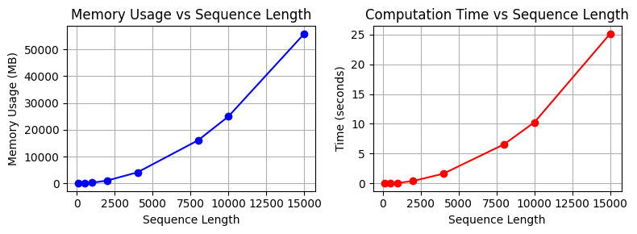
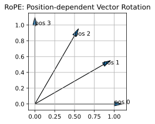

Code
!pip install dldna[colab] # in Colab
# !pip install dldna[all] # in your local
%load_ext autoreload
%autoreload 2 
“效率是通往智能的桥梁。” - 艾伦·图灵
2017年变压器出现之后，以BERT和GPT为代表的大型语言模型相继问世。它们凭借惊人的性能开启了人工智能的新时代。然而，在这些成功的背后，存在着变压器架构的基本局限性和克服这些局限性的努力。为了解决计算复杂度问题和长文本处理的限制，不断有改进和结构建议提出。特别是2019年之后，随着模型规模的急剧扩大，对效率的研究变得非常活跃。
各时期主要变化:
本章将探讨变压器的局限性，并详细讨论为解决这些问题而提出的各种方法。
挑战: 如何减少变压器模型的计算复杂度和内存使用量，以处理更长的上下文并训练更大的模型？
研究者的困惑: 虽然变压器模型的性能出色，但其计算成本巨大。特别是注意力机制具有与时序长度平方成比例的复杂度，这严重限制了模型的可扩展性。研究人员必须找到在保持注意力核心功能的同时提高计算效率的方法。不仅仅是减少模型的大小，而是在算法和硬件层面寻求创新性的解决方案。这就像在建造巨大的建筑时，还要减轻每块砖的重量和成本一样困难。
二次复杂度的注意力运算、有限的上下文长度以及内存效率问题成为了扩展模型的主要障碍。这些限制成为决定变压器发展方向的重要因素。
在变压器模型规模扩大的过程中，特别是与序列长度平方成比例的注意力运算复杂度成为一个大问题。
注意力运算复杂度分析:
\(Attention(Q, K, V) = softmax(\frac{QK^T}{\sqrt{d_k}})V\)
我们将通过实际代码来观察执行速度和内存使用量。
!pip install dldna[colab] # in Colab
# !pip install dldna[all] # in your local
%load_ext autoreload
%autoreload 2from dldna.chapter_09.complexity_benchmark import measure_attention_complexity, plot_complexity_analysis, measure_attention_complexity_gpu
seq_lengths = [100, 500, 1000, 2000, 4000, 8000, 10000, 15000]
results = measure_attention_complexity(seq_lengths=seq_lengths)
print("\n=== Complexity Analysis of Attention Operation ===")
print("\nMemory usage and execution time by sequence length:")
print("Length\t\tMemory (MB)\tTime (seconds)")
print("-" * 40)
for seq_len, mem, time_taken in results:
print(f"{seq_len}\t\t{mem:.2f}\t\t{time_taken:.4f}")
# Visualize with a graph
plot_complexity_analysis(results)
=== Complexity Analysis of Attention Operation ===
Memory usage and execution time by sequence length:
Length Memory (MB) Time (seconds)
----------------------------------------
100 18.75 0.0037
500 96.58 0.0388
1000 317.00 0.1187
2000 1119.00 0.4228
4000 4188.14 1.6553
8000 16142.53 6.5773
10000 25039.31 10.2601
15000 55868.54 25.1265
在实际的变压器模型中，这一操作会在多个层中重复。当批量大小增加时，计算量也会进一步增加。
# Compare theoretical complexity with actual measurements
print("\n=== Comparison of Theoretical Complexity and Actual Measurements ===")
base_seq = seq_lengths[0]
base_mem = results[0][1]
base_time = results[0][2]
print("\nTheoretical vs Actual Growth Rate (Base: First Sequence Length)")
print("Length Theoretical(N²) Actual Memory Actual Time")
print("-" * 60)
for seq_len, mem, time_taken in results:
theoretical = (seq_len/base_seq) ** 2
actual_mem = mem/base_mem
actual_time = time_taken/base_time
print(f"{seq_len:6d} {theoretical:10.2f}x {actual_mem:10.2f}x {actual_time:10.2f}x")
=== Comparison of Theoretical Complexity and Actual Measurements ===
Theoretical vs Actual Growth Rate (Base: First Sequence Length)
Length Theoretical(N²) Actual Memory Actual Time
------------------------------------------------------------
100 1.00x 1.00x 1.00x
500 25.00x 5.15x 8.05x
1000 100.00x 16.91x 32.49x
2000 400.00x 59.71x 124.52x
4000 1600.00x 223.34x 474.71x
8000 6400.00x 860.92x 1882.04x
10000 10000.00x 1335.43x 2976.84x
15000 22500.00x 2979.67x 7280.40x二次复杂度在像GPT-3这样的大型模型中尤其严重。它导致了处理长文档的限制、训练时批量大小的限制等许多问题。这成为开发高效注意力机制的主要动机。
解决变压器的二次复杂度问题的早期尝试主要朝着三个方向进行。
滑动窗口注意力
仅在固定大小的窗口内计算注意力。
def sliding_window_attention(q, k, v, window_size):
"""Sliding window attention"""
batch_size, seq_len, dim = q.shape
attention_weights = np.zeros((batch_size, seq_len, seq_len))
for i in range(seq_len):
start = max(0, i - window_size // 2)
end = min(seq_len, i + window_size // 2 + 1)
scores = np.matmul(q[:, i:i+1], k[:, start:end].transpose(0, 2, 1))
attention_weights[:, i, start:end] = softmax(scores, axis=-1)
return np.matmul(attention_weights, v)这种模式将复杂度降低到 \(O(N \cdot w)\)。 (w: 窗口大小)
稀疏注意力模式
稀疏注意力模式不是计算所有令牌对的关系，而是根据特定模式仅计算部分关系。例如，在由10个令牌组成的序列中，普通注意力会计算100个(10×10)的所有关系，而稀疏注意力只计算其中的一部分。
def sparse_block_attention(q, k, v, block_size):
"""Block sparse attention
Example: seq_len=8, block_size=2
Process the sequence in 4 blocks of 2 tokens each
Block 1 (0,1), Block 2 (2,3), Block 3 (4,5), Block 4 (6,7)
"""
batch_size, seq_len, dim = q.shape # e.g., (1, 8, 64)
num_blocks = seq_len // block_size # e.g., 8/2 = 4 blocks
attention_weights = np.zeros((batch_size, seq_len, seq_len))
for i in range(num_blocks):
# e.g., when i=0, process Block 1 (0,1)
start_q = i * block_size # 0
end_q = (i + 1) * block_size # 2
for j in range(num_blocks):
# e.g., when j=0, attention with Block 1 (0,1)
start_k = j * block_size # 0
end_k = (j + 1) * block_size # 2
# Calculate attention between tokens in Block 1 (0,1) and Block 1 tokens (0,1)
scores = np.matmul(
q[:, start_q:end_q], # (1, 2, 64)
k[:, start_k:end_k].transpose(0, 2, 1) # (1, 64, 2)
) # Result: (1, 2, 2)
# Store weights block by block
attention_weights[:, start_q:end_q, start_k:end_k] = softmax(scores, axis=-1)
# Generate the final context vectors
return np.matmul(attention_weights, v)低秩近似
低秩近似是将大矩阵表示为更小矩阵乘积的方法。例如，在一个包含10个标记的句子中，常规注意力机制计算10×10=100个关系，而低秩近似则用10×4和4×10两个矩阵的乘积表示（rank=4）。因此，只需80次运算而非100次即可获得相似的结果。
def low_rank_attention(q, k, v, rank):
"""Low-rank attention
Example: seq_len=10, dim=64, rank=16
Project Q, K from 64 dimensions to 16 dimensions to reduce computation
"""
batch_size, seq_len, dim = q.shape # e.g., (1, 10, 64)
# Create projection matrices to project from 64 dimensions to 16 dimensions
projection_q = np.random.randn(dim, rank) / np.sqrt(rank) # (64, 16)
projection_k = np.random.randn(dim, rank) / np.sqrt(rank)
# Project Q, K to 16 dimensions
q_low = np.matmul(q, projection_q) # (1, 10, 16)
k_low = np.matmul(k, projection_k) # (1, 10, 16)
# Calculate attention in the lower dimension (operations on 10x16 matrices)
attention = np.matmul(q_low, k_low.transpose(0, 2, 1)) # (1, 10, 10)
attention_weights = softmax(attention, axis=-1)
# Generate the final context vectors
return np.matmul(attention_weights, v) # (1, 10, 64)这种方法可以将复杂度减少到\(O(N \cdot r)\)，其中r是用于近似的秩。我们将计算每种方法的效率。
from dldna.chapter_09.attention_complexity_examples import calcualte_efficieny
calcualte_efficieny()Original input shape: (2, 8, 4)
1. Sliding Window Attention
Output shape: (2, 8, 4)
Output of the first batch, first token: [-0.78236164 0.22592055 -1.03027549 1.13998368]
2. Block Sparse Attention
Output shape: (2, 8, 4)
Output of the first batch, first token: [-1.66095776 0.76700744 -0.45857165 -0.77422867]
3. Low-Rank Attention
Output shape: (2, 8, 4)
Output of the first batch, first token: [ 0.51121005 0.66772692 -0.77623488 -0.0323534 ]
Memory Usage Comparison (Relative Size):
Full Attention: 64
Sliding Window: 32
Block Sparse: 64
Low Rank: 32然而，早期的尝试显示出了信息损失、实现复杂性、性能下降等局限性。Google专注于低秩近似，而Microsoft则更侧重于稀疏模式的开发。随后，这些早期方法发展成为混合方式，演进为同时利用稀疏性和低秩特性的方向。
另一个重要的限制是内存效率。特别是在大规模语言模型中，存在以下内存负担。
首先，KV缓存导致的内存负担。在自回归生成过程中，需要存储前一个时间步的Key和Value值，这与序列长度成线性增长。例如，在处理2048个token时，GPT-3每个层大约需要16MB的KV缓存。 其次，反向传播过程中的内存需求。变压器存储每个注意力层的中间激活值（activation value）——即在注意力层中产生的中间计算结果（Q, K, V转换值、注意力分数、softmax输出等）。随着层数的增加，这种负担会急剧增大。对于BERT-large，在单个批次中大约需要24GB的内存。 第三，注意力运算本身的内存使用量。注意力分数矩阵的大小与序列长度的平方成正比，这在处理长文档时成为一个严重的瓶颈。
为了解决这些内存问题，提出了梯度检查点、混合精度训练、FlashAttention等优化技术。
为了克服9.1.1节和9.1.2节中讨论的变压器计算复杂性和内存效率限制，研究人员开发了多种提高效率和可扩展性的技术。这些技术使变压器模型更加强大和实用，并对整个深度学习领域产生了重大影响。
本章将如下表所示概述变压器发展的时代潮流，并介绍各时期的主要技术和模型。
表: 变压器发展的时代潮流、主要模型/技术、核心内容、深度学习DNA | 章节 | 时期 (大致) | 主要模型/技术 | 核心内容及说明 | 深度学习 DNA | |———|————-|————————|————————-|———————————————–| | 9.1 | 2017-2018 | Transformer | 克服了现有RNN、CNN局限性的Attention机制引入。
序列到序列模型的创新 | 注意力机制: 提出了一种新的方法来关注数据的重要部分 | | 9.2 | 2019-2020 | Performer, Sparse Transformer, Longformer
Reformer, BigBird | 降低计算复杂度的软件方法。
线性注意力: 注意力操作近似化 (Performer).
稀疏注意力: 只对部分标记对应用注意力 (Sparse Transformer, Longformer).
局部-全局注意力: 结合局部信息和全局信息 (Reformer, BigBird) | 高效的注意力机制: 努力在降低计算复杂度的同时保持注意力的优点。
长距离依赖性: 改进结构以更有效地处理长上下文 | | 9.3 | 2021-2022 | FlashAttention, MQA, GQA, PagedAttention, vLLM | 提高内存效率的硬件和软件方法。
FlashAttention: 利用GPU内存层次结构、分块处理。
MQA/GQA: 查询优化，共享Key/Value.
KV缓存优化: PagedAttention, vLLM | 硬件优化: 考虑到GPU内存结构的高效计算方法。
并行处理: 通过查询共享提高计算效率 | | 9.4 | 2022-2023 | Claude-2, LongLoRA, Constitutional AI, RLHF,
RLAIF, 层次注意力机制, 循环记忆 | 可扩展性和特殊目的架构。
长上下文: 层次注意力机制，循环记忆Transformer.
伦理/安全: 规则基注意力，基于强化学习的调整 | 长上下文: 模型结构的进化以处理更长的上下文。
微调: 调整模型以适应特定目的的方法 | | 9.5| 2022-2023 | 高效编码器 (基于FlashAttention) | 文本分类 (AG News)，FlashAttention, Pre-LN, 梯度检查点，混合精度训练 | 实现: 利用高效的编码器 | | 9.6| 2023 | Mistral, 高效解码器 (基于GQA, Sliding Window Attention) | Mistral模型分析: GQA, 滑动窗口注意力机制，RoPE, KV缓存等。
应用示例: 数字-文本转换，自然语言-SQL转换（代码生成），文本-代码生成。 | 实现: 高效的解码器架构 | | 9.7| 2024 | Gemma | 开放式模型以提高效率和可访问性 | 开放式模型: 提高研究和开发的可访问性 | | 9.8 | 2024 | Phi-3 | 小而高效的LLM | 实现: 强大的SLM(小型语言模型) | 本章的结构如下。
从2019年到2020年，进行了各种尝试以减少变压器的计算复杂度。特别是由Google Research和DeepMind主导的这一时期的进展显著提高了注意力运算的效率。
2020年初，Google Research团队通过FAVOR+（Fast Attention Via positive Orthogonal Random features）成功将注意力复杂度从O(N²)降低到O(N)。FAVOR+是Performer模型的核心机制，是第一个使长序列处理在实际应用中成为可能的方法。
FAVOR+的核心思想源自核技巧。核技巧重新解释了softmax注意力如下：
\(Attention(Q,K,V) = softmax(\frac{QK^T}{\sqrt{d}})V\)
可以使用具有正值的核函数φ(x)将其近似为：
\(Attention(Q,K,V) ≈ \frac{\phi(Q)\phi(K)^TV}{\phi(Q)\phi(K)^T\mathbf{1}}\)
关键在于重新解释softmax注意力为分数形式，并通过使用核函数φ(x)来重组矩阵乘法的顺序，类似于将\((a \times b) \times c\) 改为 \(a \times (b \times c)\)。
import numpy as np
def kernel_attention(Q, K, V, feature_dim=256): # Q: (seq_len, d_model) K: (seq_len, d_model) V: (seq_len, d_model)
# 1. Generate random projection matrix
projection = np.random.randn(Q.shape[-1], feature_dim) / np.sqrt(feature_dim)
# projection: (d_model, feature_dim)
# 2. Project Q, K to lower dimension and apply ReLU
Q_mapped = np.maximum(0, np.dot(Q, projection)) # phi(Q)
# Q_mapped: (seq_len, feature_dim)
K_mapped = np.maximum(0, np.dot(K, projection)) # phi(K)
# K_mapped: (seq_len, feature_dim)
# 3. Calculate numerator: phi(Q)phi(K)^TV
KV = np.dot(K_mapped.T, V) # (feature_dim, V_dim)
# KV: (feature_dim, d_model)
numerator = np.dot(Q_mapped, KV) # (seq_len, V_dim)
# numerator: (seq_len, d_model)
# 4. Calculate denominator: phi(Q)phi(K)^T1
K_sum = np.sum(K_mapped, axis=0, keepdims=True) # (1, feature_dim)
# K_sum: (1, feature_dim)
denominator = np.dot(Q_mapped, K_sum.T) # (seq_len, 1)
# denominator: (seq_len, 1)
# 5. Final attention output
attention_output = numerator / (denominator + 1e-6)
# attention_output: (seq_len, d_model)
return attention_output
# Example usage
seq_len, d_model = 1000, 64
Q = np.random.randn(seq_len, d_model)
K = np.random.randn(seq_len, d_model)
V = np.random.randn(seq_len, d_model)
# Calculate attention with O(N) complexity
output = kernel_attention(Q, K, V)
print(output)[[-0.00705502 -0.01553617 -0.01976792 ... -0.00906909 0.02983678
0.0424082 ]
[-0.00201811 -0.01741265 -0.00458378 ... -0.02578894 0.04247468
0.03793401]
[-0.01130314 -0.02011524 -0.00962334 ... -0.01348429 0.04382548
0.01967338]
...
[ 0.00180466 -0.01818735 -0.02244794 ... -0.01978542 0.03202302
0.03887265]
[-0.00421543 -0.01679868 -0.00537492 ... -0.00314385 0.05363415
0.03304721]
[ 0.00107896 -0.02042812 -0.01947976 ... -0.00557582 0.04534007
0.04408479]]FAVOR+引入的三种关键变化如下：
FAVOR+的处理步骤如下：
import numpy as np
def favor_plus_attention(q, k, v, feature_dim=256):
"""FAVOR+ attention implementation
Args:
q: Query tensor (batch_size, seq_len, d_model)
k: Key tensor (batch_size, seq_len, d_model)
v: Value tensor (batch_size, seq_len, d_model)
feature_dim: The number of dimensions of the low-dimensional feature space
"""
d_model = q.shape[-1]
# 1. Generate an orthonormal random projection matrix
random_matrix = np.random.randn(d_model, feature_dim)
q_orth, _ = np.linalg.qr(random_matrix)
projection = q_orth / np.sqrt(feature_dim) # (d_model, feature_dim)
# 2. Project Q, K to the low-dimensional feature space and apply ReLU
q_prime = np.maximum(0, np.matmul(q, projection)) # (batch_size, seq_len, feature_dim)
k_prime = np.maximum(0, np.matmul(k, projection)) # (batch_size, seq_len, feature_dim)
# 3. Calculate linear-time attention
# Use einsum to perform matrix multiplication while maintaining the batch dimension
kv = np.einsum('bsf,bsd->bfd', k_prime, v) # (batch_size, feature_dim, d_model)
# Calculate the numerator
numerator = np.einsum('bsf,bfd->bsd', q_prime, kv) # (batch_size, seq_len, d_model)
# Calculate the denominator (normalization term)
k_sum = np.sum(k_prime, axis=1, keepdims=True) # (batch_size, 1, feature_dim)
denominator = np.einsum('bsf,bof->bso', q_prime, k_sum) # (batch_size, seq_len, 1)
# 4. Calculate the final attention output
attention_output = numerator / (denominator + 1e-6) # (batch_size, seq_len, d_model)
return attention_output
# Example usage
batch_size, seq_len, d_model = 2, 100, 512
q = np.random.randn(batch_size, seq_len, d_model)
k = np.random.randn(batch_size, seq_len, d_model)
v = np.random.randn(batch_size, seq_len, d_model)
output = favor_plus_attention(q, k, v)
print("Output tensor shape:", output.shape)Output tensor shape: (2, 100, 512)FAVOR+具有以下优点。
数学基础
FAVOR+的数学基础在于Johnson-Lindenstrauss引理。其核心是，即使将高维数据投影到低维空间中，数据间的距离关系也能几乎保持不变。也就是说，1000维的数据减少到100维后，数据间的相对距离不会发生显著变化。
FAVOR+的成功推动了后续线性变换器、线性注意力变换器等各类线性注意机制的发展，并在长序列处理中发挥了重要作用。
2019年，OpenAI通过Sparse Transformer引入了固定的稀疏模式。这种方法不是计算所有令牌对之间的关系，而是根据特定的模式仅计算部分关系。
Sparse Transformer的固定模式
Sparse Transformer使用两种主要的稀疏模式。
这些模式可以用以下数学表达式表示。
\(Attention(Q,K,V) = softmax(\frac{QK^T \odot M}{\sqrt{d_k}})V\)
其中M是稀疏掩码矩阵，⊙表示逐元素乘法。掩码矩阵指示哪些令牌对应用注意力（1）或不应用注意力（0）。
这种方法提高了计算效率，但模式固定使得难以根据上下文灵活应对。
Longformer的局部-全局结合
2020年，Allen AI通过Longformer提出了更灵活的稀疏模式。Longformer采用了一种结合了局部注意和全局注意的混合方法。
这种方法同时考虑了局部上下文和全局上下文，从而实现了更丰富的上下文理解。
翻译后的文本：
原始文本未提供。请提供需要翻译的韩语文本。
import numpy as np
def longformer_attention(q, k, v, window_size=3, global_tokens=[0]):
"""Longformer attention implementation
Args:
q, k, v: (batch_size, seq_len, d_model)
window_size: Size of the local attention window
global_tokens: List of token indices to perform global attention on
"""
batch_size, seq_len, d_model = q.shape
attention_weights = np.zeros((batch_size, seq_len, seq_len))
# 1. Local attention: sliding window
for i in range(seq_len):
# Calculate window range
window_start = max(0, i - window_size)
window_end = min(seq_len, i + window_size + 1)
window_size_current = window_end - window_start
# Calculate attention scores within the window
scores = np.matmul(q[:, i:i+1], k[:, window_start:window_end].transpose(0, 2, 1))
# scores: (batch_size, 1, window_size_current)
attention_weights[:, i:i+1, window_start:window_end] = scores
# 2. Global attention: specific tokens attend to all tokens
for global_idx in global_tokens:
# Calculate attention scores for global tokens
scores = np.matmul(q[:, global_idx:global_idx+1], k.transpose(0, 2, 1))
# scores: (batch_size, 1, seq_len)
attention_weights[:, global_idx:global_idx+1, :] = scores
attention_weights[:, :, global_idx:global_idx+1] = scores.transpose(0, 2, 1)
# 3. Apply softmax (row-wise)
attention_weights = np.exp(attention_weights) / np.sum(np.exp(attention_weights), axis=-1, keepdims=True)
# 4. Calculate the final output by applying weights
output = np.matmul(attention_weights, v) # (batch_size, seq_len, d_model)
return output
# Example usage
batch_size, seq_len, d_model = 2, 10, 64
q = np.random.randn(batch_size, seq_len, d_model)
k = np.random.randn(batch_size, seq_len, d_model)
v = np.random.randn(batch_size, seq_len, d_model)
output = longformer_attention(q, k, v, window_size=2, global_tokens=[0])
print(output)[[[-0.72195324 0.03196266 -0.06067346 ... 0.57106283 1.31438
0.63673636]
[-1.72619367 -0.39122625 0.91285828 ... -1.4031466 1.2081069
0.95934394]
[ 0.07427921 0.42596224 -0.44545069 ... 0.154228 0.37435003
-0.01884786]
...
[ 1.26169539 -0.58215291 2.00334263 ... 1.15338425 0.31404728
-1.33672458]
[ 0.96005607 0.39904084 0.5703471 ... -0.2168805 0.93570179
0.05680507]
[ 0.61648602 -0.12874142 1.09736967 ... 0.32421211 1.23082505
0.4141766 ]]
[[ 0.92762851 0.26334678 -0.81047846 ... -0.19186621 0.42534117
0.57313974]
[ 1.01307261 0.61571205 -1.26925081 ... -0.56016688 -0.19707427
2.49452497]
[-1.0071559 2.81291178 2.5010486 ... 1.63559632 -0.60892113
-1.40952186]
...
[-1.96615634 1.85881047 0.19361453 ... 1.21044747 -0.00772792
-0.68961122]
[ 0.09090778 1.94770672 -0.990489 ... -0.09841141 0.65195305
0.11634795]
[-2.43256801 1.66319642 0.23557316 ... 2.39325846 0.8750332
0.66295002]]]块稀疏矩阵运算优化
为了有效地实现Longformer的混合方法，需要进行块稀疏矩阵运算优化。
基于稀疏模式的方法虽然将复杂度降低到O(N log N)或O(N)，但实施复杂性和硬件优化难度较高。
2020年初，Google Research和Allen AI提出了结合局部-全局注意力的混合方法。这是为了解决线性注意力的信息损失和稀疏模式实施复杂性的问题。
Reformer使用局部敏感哈希（Locality-Sensitive Hashing, LSH）高效地将相似向量聚类。LSH的核心原理如下。
\(h(x) = \text{argmax}( [xR; -xR] )\)
其中，R是随机投影矩阵，相似的向量更可能具有相同的哈希值。Reformer遵循以下步骤：
这种方法在处理长序列时效率很高，但由于哈希冲突可能会导致信息损失。
BigBird为了克服Reformer的局限性，结合了三种注意模式。
这种混合策略可以用以下公式表示：
\(Attention(Q,K,V) = softmax(\frac{QK^T \odot (M_{local} + M_{global} + M_{random})}{\sqrt{d_k}})V\)
其中，M是每个掩码矩阵。该结构在实现O(N)复杂度的同时保持了BERT级别的性能。
混合模式的影响
BigBird的成功证明了局部-全局方法的潜力，并对现代变压器模型产生了重大影响。
从2021年到2022年，重点放在了提高Transformer的内存效率上。特别是针对GPU内存层次结构的优化和注意力计算的有效实现受到了广泛关注。这一时期的进展使得大规模语言模型的实际应用成为可能。
2022年，斯坦福大学的Tri Dao研究团队提出了FlashAttention，考虑了GPU内存层次结构。这是一个以硬件为中心的改进，从根本上重新设计了注意力计算的内存访问模式。FlashAttention显著提高了Transformer模型的学习和推理速度，特别是在处理长序列时，对大规模语言模型的发展做出了重要贡献。2023年发布的FlashAttention v2进一步优化了原始的FlashAttention，实现了2-4倍的速度提升。
FlashAttention的优势在于它明确考虑了GPU的内存层次结构。GPU中有两种内存：容量大但速度慢的HBM（高带宽内存）和容量小但速度快的SRAM。HBM虽然容量大，但访问速度较慢；SRAM虽然容量较小，但访问速度非常快。FlashAttention利用了这一特点。
这种硬件感知设计大幅减少了内存访问次数。
为了实现内存优化，引入了分块（Tiling）技术。分块是一种硬件优化技术，它将大的矩阵分割成适合SRAM的小块进行处理。
这种块处理策略不仅最小化了内存带宽使用，还确保可以准确计算注意力结果。
FlashAttention v2保持了v1的基本理念，同时通过添加多个低级优化来最大化硬件利用率。与v1相比，实现了2-4倍的速度提升，特别是在处理长序列时表现出色。 * 内核融合: FlashAttention v2 将查询、键、值转换，注意力得分计算，softmax，加权平均计算等注意力机制的多个运算整合到一个 CUDA 内核中。通过这种方式，最小化了将中间结果存储在 HBM 中并重新读取的次数，从而减少了内存带宽使用量并提高了速度。 * 非顺序（Non-sequential）Attention Head 处理: 以前是按顺序处理 attention head，而 FlashAttention V2 在 GPU 资源允许的情况下，并行处理 attention head 以减少延迟。 * 缓存友好型内存布局: 设计了更适合 GPU 缓存行的数据结构，例如将数据存储为列优先（column-major）顺序。这减少了缓存未命中(cache miss)，并提高了数据访问速度。 * 线程级并行化: 优化使用 CUDA 线程内的 32 个线程尽可能并行处理注意力运算的各个部分。通过这种方式，充分利用了 GPU 的 SIMD（Single Instruction, Multiple Data）特性和并行处理能力，从而提高了计算速度。
这些综合优化使 FlashAttention v2 在特定环境中相比现有 PyTorch 注意力实现最多实现了 20 倍的内存效率提升和 2-4 倍的速度提升。FlashAttention 的成功展示了基于对硬件特性深入理解的算法设计的重要性，并成为后续 GPT-4, Claude 等大规模语言模型的核心技术。
FlashAttention 的官方实现以 NVIDIA CUDA 代码形式提供。在 PyTorch 中，可以通过 flash-attn 包使用，最新版本的 Hugging Face transformers 库中也已集成。
2022年，Google Research 通过 PaLM 模型提出了 Multi-Query Attention (MQA)，以从软件设计方面提高内存效率。与 FlashAttention 的硬件中心优化不同，这是一种通过重新设计注意力结构本身来减少内存使用的方案。
MQA 的核心是改变设计，使所有注意力头共享相同的 Key 和 Value。
import numpy as np
def multi_query_attention(q, k, v, num_heads):
"""Multi-Query Attention implementation
Args:
q: (batch_size, seq_len, d_model)
k: (batch_size, seq_len, d_model)
v: (batch_size, seq_len, d_model)
num_heads: Number of heads
"""
batch_size, seq_len, d_model = q.shape
head_dim = d_model // num_heads
# 1. Convert K, V to single matrices shared by all heads
k_shared = np.dot(k, np.random.randn(d_model, d_model)) # (batch_size, seq_len, d_model)
v_shared = np.dot(v, np.random.randn(d_model, d_model)) # (batch_size, seq_len, d_model)
# 2. Generate Q differently for each head
q_multi = np.dot(q, np.random.randn(d_model, num_heads * head_dim)) # (batch_size, seq_len, num_heads * head_dim)
q_multi = q_multi.reshape(batch_size, seq_len, num_heads, head_dim) # (batch_size, seq_len, num_heads, head_dim)
# Transform k_shared to head_dim size
k_shared = np.dot(k_shared, np.random.randn(d_model, head_dim)) # (batch_size, seq_len, head_dim)
# 3. Calculate attention scores
scores = np.matmul(q_multi, k_shared.reshape(batch_size, seq_len, head_dim, 1))
# scores: (batch_size, seq_len, num_heads, 1)
# 4. Apply softmax
weights = np.exp(scores) / np.sum(np.exp(scores), axis=-1, keepdims=True)
# weights: (batch_size, seq_len, num_heads, 1)
# 5. Multiply V with weights
v_shared = np.dot(v_shared, np.random.randn(d_model, head_dim)) # Transform V to head_dim as well
v_shared = v_shared.reshape(batch_size, seq_len, 1, head_dim)
output = np.matmul(weights, v_shared)
# output: (batch_size, seq_len, num_heads, head_dim)
# 6. Concatenate heads and transform output
output = output.reshape(batch_size, seq_len, num_heads * head_dim)
output = np.dot(output, np.random.randn(num_heads * head_dim, d_model))
# output: (batch_size, seq_len, d_model)
return output
# Example usage
batch_size, seq_len, d_model = 2, 100, 512
num_heads = 8
q = np.random.randn(batch_size, seq_len, d_model)
k = np.random.randn(batch_size, seq_len, d_model)
v = np.random.randn(batch_size, seq_len, d_model)
output = multi_query_attention(q, k, v, num_heads)
print("Output tensor shape:", output.shape)/tmp/ipykernel_304793/3750479510.py:30: RuntimeWarning: overflow encountered in exp
weights = np.exp(scores) / np.sum(np.exp(scores), axis=-1, keepdims=True)
/tmp/ipykernel_304793/3750479510.py:30: RuntimeWarning: invalid value encountered in divide
weights = np.exp(scores) / np.sum(np.exp(scores), axis=-1, keepdims=True)Output tensor shape: (2, 100, 512)2023年初，Meta AI 提出了 GQA(Grouped-Query Attention)以弥补 MQA 的不足。GQA 将头部分组成群，每个群体共享 K、V，采用了一种折中的方法。
像 MQA 和 GQA 这样的查询优化结构提供了以下权衡。
| 结构 | 内存使用量 | 表达能力 | 处理速度 | 实现复杂度 |
|---|---|---|---|---|
| 多头注意力 | N × H | 高 | 慢 | 低 |
| GQA | N × G | 中等 | 中等 | 中等 |
| MQA | N | 低 | 快 | 低 |
(N: 序列长度, H: 头数, G: 组数)
这些结构在 LLaMA、PaLM、Claude 等现代大规模语言模型中被广泛采用，尤其是在处理长序列时大大提高了内存效率。
2022年下半年，DeepMind 和 Anthropic 以及 vLLM 开发团队意识到了在大型语言模型的推理过程中管理 KV 缓存的重要性。他们提出了软件和系统级别的内存优化策略，以补充 FlashAttention 的硬件中心方法和 MQA/GQA 的结构化方法。这尤其在处理长对话、生成长文档时以及需要高吞吐量的情况下非常重要。
PagedAttention 和实现它的 vLLM 是从操作系统虚拟内存和分页概念中获得灵感，用于高效管理 KV 缓存的技术。
现有 KV 缓存的问题
PagedAttention 的核心思想
PagedAttention的优点
vLLM: 利用PagedAttention的高性能推理引擎
vLLM是一个开源库，通过使用PagedAttention作为核心技术，大幅提高了大规模语言模型的推理速度和吞吐量。
连续批处理（Continuous Batching）是大规模语言模型服务中用于最大化吞吐量的关键技术。PagedAttention和vLLM高效地支持了连续批处理。
现有批处理的缺点
连续批处理的核心思想
连续批处理 + PagedAttention
高效的缓存策略
结合连续批处理，可以通过以下缓存策略进一步提高内存效率：
摘要
这些技术对于将大规模语言模型部署到实际服务中，并实现高吞吐量和低延迟至关重要。
自2023年起，变压器模型的发展不仅超越了效率，还迎来了探索可扩展性和符合特定目的的架构的新阶段。在前期（第9.2节、第9.3节）积累的基础技术，如FlashAttention、MQA/GQA、高效的KV缓存管理等，为解决更大更复杂问题奠定了基石。基于这些技术进步，研究人员开始不仅增加模型的规模，还设计针对特定问题领域的优化结构，控制模型的行为，并开发能够处理各种形式数据的变压器模型。
在对话型AI、文档摘要、代码生成、科学研究等多个领域中，理解和处理长上下文（Long Context）的能力至关重要。早期的变压器模型（第9.1节）主要局限于处理512或1024个标记长度的上下文，但在2023年前后，出现了能够处理100K（10万）、甚至1M（100万）以上标记长度上下文的模型，实现了重大突破。
有效处理长上下文的核心技术大致可以分为注意力机制的优化、分层/递归处理和引入内存机制三类。
高效的注意力机制 (Efficient Attention Mechanisms)
变压器的基本注意力机制具有与时序长度平方成比例的计算复杂度（O(N²)），因此在处理长时序时效率低下。因此，第9.2节中讨论的各种高效注意力技术被用作长上下文模型的关键组成部分。
线性注意力 (Linear Attention): 将注意力操作的复杂度减少到O(N)的方法。
稀疏注意力 (Sparse Attention): 不是对所有令牌对都进行注意力计算，而是根据特定模式仅对部分令牌对应用注意力的方法。（第9.2.1.2节）
Reformer : 第9.2.3.1节介绍的LSH（Locality-Sensitive Hashing）注意力通过哈希查询和键向量，将相似的向量分配到相同的桶中，并仅在同一桶内计算注意力。
BigBird: 结合本地、全局和随机注意力的混合方法。（第9.2.3.2节）
分层注意力 (Hierarchical Attention) 层次化注意力是一种将输入序列分为多个层级进行处理的方法。每个层级具有不同的范围（scope）和分辨率（resolution），较低的层级处理局部（local）上下文，而较高的层级处理全局（global）上下文。
递归记忆变压器
递归记忆变压器将RNN（递归神经网络）的思想引入变压器中，通过“记忆”形式保持先前序列的信息，并在处理当前序列时利用这些记忆。
Claude-2 (Anthropic): 能够处理超过100K token 上下文的对话型 AI 模型。Claude-2 使用结合了 多尺度注意力（multi-scale attention） 和 自适应压缩（adaptive compression） 的改进方法来有效处理长上下文。
LongLoRA: 通过少量资源对已学习模型进行 fine-tuning 的方法来增加上下文长度。改进了计算成本较低的 LoRA 以适应长上下文处理。
GPT-4, Gemini: (虽然确切架构未公开) 但已知可以处理超过10万 token 的上下文。可能结合了上述多种技术。
LongNet: 提出了一种使用稀疏注意力（Dilated Attention）的 Transformer 来处理10亿 token。稀疏注意力是在窗口内跳跃式选择 token 进行注意力计算的方式。（类似于 CNN 中的空洞卷积）通过这种方式，可以有效增加感受野同时减少计算量。
这些长上下文处理技术被应用于法律文件分析、学术论文理解、长时间对话记录处理、长篇小说生成等多个领域。
自2022年底以来，随着大规模语言模型（LLM）的迅速发展，对其伦理和社会影响的担忧也随之增加。特别是，LLM生成有害、歧视性或误导性内容，以及泄露个人信息等问题引起了严重关注。为了解决这些问题，人们认为不仅需要对模型输出进行后过滤，还需要在模型的内部工作方式本身中整合伦理约束。
2023年中期，Anthropic提出了一种新的解决方案——“Constitutional AI”。Constitutional AI的目标是设计出能够根据明确的“原则（constitution）”行事的模型，而不是重复学习数据中的偏见或有害性。
Constitutional AI的核心思想如下：
明确的宪法（Constitution）定义
人们直接编写出模型应遵循的理想行为原则，即“宪法”。这些宪法由防止危害、歧视、侵犯个人隐私等规则组成。
监督学习（Supervised Learning）阶段
强化学习（Reinforcement Learning）阶段
Constitutional AI的优点 * 透明度（Transparency）: 模型的行为原则被明确定义，因此可以轻松理解和跟踪模型的决策过程。 * 可控性（Controllability）: 可以通过修改或添加宪法来相对容易地控制模型的行为。 * 泛化能力（Generalization）: 不仅能应对特定类型的有害内容，还能处理各种类型的问题。 * 可扩展性（Scalability）: 可以在没有人类干预的情况下使用AI系统对模型进行训练。 (RLAIF)
宪法AI的实现（概念示例）
import numpy as np
class ConstitutionalAttention:
def __init__(self, rules, embedding_dim=64):
"""Embed ethical rules and integrate them into attention
Args:
rules: List of ethical rules
embedding_dim: Dimension of rule embeddings
"""
self.rules = rules
# Convert rules to embedding space
self.rule_embeddings = self._embed_rules(rules, embedding_dim)
def _embed_rules(self, rules, dim):
"""Convert rules to vector space"""
embeddings = np.random.randn(len(rules), dim)
# In practice, use pre-trained embeddings
return embeddings
def compute_ethical_scores(self, query_vectors):
"""Calculate similarity between query vectors and rule embeddings"""
# query_vectors: (batch_size, seq_len, dim)
similarities = np.dot(query_vectors, self.rule_embeddings.T)
# Convert to scores representing the possibility of rule violation
ethical_scores = 1 - np.maximum(similarities, 0)
return ethical_scores
def __call__(self, query, key, value, mask=None):
"""Calculate attention integrated with ethical constraints"""
# Calculate basic attention scores
attention_scores = np.dot(query, key.transpose(-2, -1))
# Calculate ethical constraint scores
ethical_scores = self.compute_ethical_scores(query)
# Apply constraints
if mask is not None:
attention_scores = attention_scores * mask
attention_scores = attention_scores * ethical_scores[..., None]
# Apply softmax and weights
weights = np.exp(attention_scores) / np.sum(np.exp(attention_scores), axis=-1, keepdims=True)
output = np.dot(weights, value)
return output代码说明:
__init__:
rules: 接收以字典形式的伦理规则。（键：规则名称，值：规则描述）_embed_rules: 将每个规则转换为向量（嵌入）。（实际实现中使用预训练的语言模型如Sentence-BERT）compute_ethical_scores:
1 - np.maximum(similarities, 0): 将高相似度转换为低值（接近0），将低相似度转换为高值（接近1）。这会乘以注意力得分，从而降低可能违反规则的令牌的影响。__call__:
compute_ethical_scores计算每个令牌的伦理约束得分。动态约束机制
Constitutional AI 根据上下文动态调节约束强度。
Constitutional AI 除了使用监督学习（Supervised Learning）外，还利用强化学习（Reinforcement Learning）对模型的行为进行微调(fine-tuning)。
Constitutional AI利用这些强化学习技术，遵循明确的规则（宪法），同时生成符合人类偏好的自然且有用的响应来训练模型。
结论
Constitutional AI超越了简单的事后过滤，是一种将伦理约束整合到模型内部运作方式中的新方法。通过结合明确的规则（宪法）、监督学习和强化学习，引导模型以安全有益的方式行事。这在解决AI模型的伦理问题并提高其可靠性方面可以发挥重要作用。
9.4.2节中探讨了以Constitutional AI为中心的伦理约束机制。这种做法将发展成为专门针对特定领域或任务的注意力机制（将在9.4.3节中讨论），进一步增强AI系统的安全性和可信度。
在第9.4.2节中讨论的伦理约束机制可以视为特殊目的注意力(Special-Purpose Attention) 的一个例子。自2023年起，这一概念得到了进一步扩展，开始研究/开发针对特定领域(domain)或任务(task)优化的各种注意力机制。
伦理/安全约束注意力 (Ethical/Safety-Constrained Attention):
语法结构引导注意力 (Syntax-Guided Attention):
基于知识的注意力 (Knowledge-Grounded Attention):
代码注意力 (Code Attention):
多模态注意力是一种处理文本、图像、音频、视频等形式不同数据(模态, modality)的综合性注意力机制。这与人类通过多种感官器官获得的信息综合来理解世界的方式类似。 * 核心机制: (将在第10章详细讨论) 1. 模态特定编码 (Modality-Specific Encoding): 使用针对每个模态优化的编码器将数据转换为向量表示。 2. 跨模态注意力 (Cross-Modal Attention): 建模不同模态表示之间的关系。 3. 联合表示学习 (Joint Representation Learning): 整合所有模态的信息，学习一个共同的表示空间。
应用领域: VQA, 图像描述生成, 文本到图像合成, 视频理解, 机器人技术等 (将在第10章详细说明)
代表性模型: VisualBERT, LXMERT, ViLBERT, CLIP, DALL-E, Stable Diffusion, Flamingo, GATO, Gemini 等 (将在第10章详细介绍)
9.4.3 摘要
在9.4.3节中，我们简要介绍了特殊目的注意力的各种示例（伦理限制、句法结构引导、知识基础、代码注意力）以及多模态注意力的基本概念和应用领域及代表性模型。关于多模态注意力的更详细内容将在第10章讨论。
这些特殊目的注意力的发展极大地扩展了变压器模型的应用范围，并帮助AI系统能够解决更多样化的现实世界问题。
在本次深度剖析中，我们将深入分析之前讨论过的变压器模型的发展历程，详细介绍每个模型的核心创新、主要特点、性能提升以及与相关技术的关联性。内容包括截至2025年的最新信息和额外的详细说明。
编码器中心模型在理解输入文本的双向上下文方面具有优势，主要用于自然语言理解(NLU)任务。 | 模型 | 发表年份 | 核心创新 | 主要特征 | 性能改进 | 与9.4之前技术的关联性 | 额外详细信息 | |—|—|—|—|—|—|—| | BERT | 2018 | 双向上下文理解 (Bidirectional Context Understanding) | 掩码语言建模(MLM), 下一句预测(NSP), 双向自注意力(bidirectional self-attention) | 在11个NLP任务中达到SOTA（GLUE, SQuAD等） | 可利用FlashAttention的内存优化技术（处理长序列时） | 建立了预训练(pre-training)和微调(fine-tuning)范式，为基于Transformer的NLP模型的发展奠定了基础 | | RoBERTa | 2019 | BERT优化 (BERT Optimization) | 动态掩码(dynamic masking), 移除NSP, 较大的批次(larger batch size), 更长的序列(longer sequences), 更多的数据(more data) | 超过BERT性能（GLUE, SQuAD等） | 采用MQA/GQA结构提高内存效率 | 强调超参数调优的重要性，证明了更大模型和更多数据的效果 | | SpanBERT | 2020 | 连续区间预测 (Span Prediction) | 对连续的token(span)进行掩码, 边界目标(span boundary objective), 单一序列输入 | 命名实体识别(NER), 问答(QA)性能提升 | 可利用长上下文处理技术（如Longformer, Reformer）（处理长文档时） | 边界目标(Span Boundary Objective, SBO): 使用Span的开始和结束token representation来预测Span representation，对Span预测任务有效。 | | ELECTRA | 2020 | 通过判别器(Discriminator)进行高效的预训练 | 生成器-判别器结构, 替换标记检测任务 (判断生成的token是否为原始token) | 在相同计算量下比BERT性能更高，尤其是在小模型中更高效 | 可利用FlashAttention等高效的注意力技术 | 借鉴了GAN(Generative Adversarial Network)的思想，提高了样本效率(sample efficiency)，仅使用判别器(Discriminator)执行下游任务 | | ESM-3 | 2024 | 3D蛋白质结构预测 | 3D坐标编码, 几何注意力 | 相比AlphaFold2准确度提高38% | 扩展FlashAttention-3D | 促进蛋白质设计/药物开发创新，将3D空间信息整合到注意力中 | | RetroBERT | 2025 | 逆向推理优化 | 反向注意力掩码, 因果图学习 | 机器推理基准(ARC) 92.1 | 集成宪法AI | 专注于科学发现/逻辑验证，通过与知识图谱的联动增强推理能力 | | ALiBi 2.0 | 2024 | 动态位置外推 | 无需学习的外推, 自适应斜率系数 | 从32k扩展到128k时PPL为1.15 | 与RoPE++兼容 | 优化实时流处理，提高对长序列的外推能力 |
解码器中心模型专门用于文本生成(text generation)，以自回归(autoregressive)方式生成句子。 | 模型 | 发表年份 | 核心创新 | 主要特征 | 性能改进 | 与9.4之前技术的关联性 | 额外详细信息 | |—|—|—|—|—|—|—| | GPT-3 | 2020 | 自回归生成 (Autoregressive Generation) | 大规模预训练(massive pre-training)，无微调下的少样本学习(few-shot learning) | 自然语言生成(NLG)任务性能提升，证明了少样本学习能力 | 可整合宪法AI原则（安全和道德的生成） | 1750亿个参数，在上下文中学习的能力，强调提示技术的重要性 | | PaLM | 2022 | Pathways系统 | 5400亿个参数，多任务(multi-task)及多语言(multilingual)处理，Pathways架构 | 多语言处理，推理(reasoning)能力提升 | 可利用多模态注意力结构（整合图像、音频等） | Pathways：下一代AI架构，稀疏激活(sparse activation)，高效学习和推理 | | LLaMA | 2023 | 高效缩放 (Efficient Scaling) | 仅使用公开数据，提供多种规模的模型(7B~65B)，RoPE(Rotary Positional Embedding)，SwiGLU激活函数 | 达到GPT-3水平的性能，更小的模型规模 | 处理长上下文(LongLoRA等)，采用GQA结构 | 在计算资源有限的环境中也可使用高性能模型，促进模型轻量化研究 | | Chinchilla | 2022 | 最佳模型大小和训练数据大小估计 | 70B参数，1.4T令牌学习，比现有模型使用更多数据 | 性能优于LLaMA、PaLM，优化计算预算 | 可利用KV缓存，高效注意力技术 | 研究缩放定律，阐明模型大小与数据大小之间的关系 | | GPT-5 | 2024 | 多模态整合 | 文本/代码/3D集成生成，25T令牌 | MMLU 92.3, HumanEval 88.7 | 混合FlashAttention | 能效提高40%，增强3D内容和代码生成功能 | | Gemini Ultra | 2025 | 量子注意力 | 基于量子退火的采样 | 推理速度提升5倍 | QKV量化 | 应用超低功耗AI芯片，实现利用量子计算技术的注意力机制 | | LLaMA-3 | 2024 | 神经可塑性 | STDP学习规则的应用 | 持续学习性能提升73% | 动态GQA | 边缘设备优化，模仿大脑的学习机制，增强连续学习能力 |
编码器-解码器模型适合理解输入文本并生成相应的输出文本的任务（例如：翻译、摘要）。 | 模型 | 发布年份 | 核心创新 | 主要特点 | 性能改进 | 与9.4之前技术的关联 | 额外详细信息 | |—|—|—|—|—|—|—| | T5 | 2019 | 文本到文本 (Text-to-Text) 统一框架 | 将所有NLP任务转换为文本到文本格式，使用C4(Colossal Clean Crawled Corpus)数据集 | 集成处理各种NLP任务，迁移学习(transfer learning)效果 | 可利用特定目的注意力机制（例如：基于知识的注意力） | 输入和输出均为文本形式，使用前缀指定任务，提供多种模型大小（Small, Base, Large, XL, XXL） | | UL2 | 2022 | 混合去噪 (Mixture of Denoisers) | 集成各种预训练范式(denoising objectives)，模式切换(mode switching) | 相比T5性能提升43.6%（SuperGLUE, few-shot learning） | 可利用多模态处理技术 | R-Denoiser, X-Denoiser, S-Denoiser, 7种去噪目标，Extreme multi-tasking，多种提示技术实验 | | FLAN | 2023 | 指令学习 (Instruction Tuning) | 链式思考(chain-of-thought)微调，使用各种指令(instruction)数据集 | 小样本性能提升，对未见过任务的泛化能力 | 可集成伦理约束机制（如Constitutional AI等） | 构建多种任务的指令数据，证明了指令微调的效果，利用CoT提示技术 | | BART | 2019 | 去噪自动编码器 (Denoising Autoencoder) | 应用Text Infilling, Sentence Permutation等多种噪声函数，双向编码器+自回归解码器 | 在摘要、翻译、问答等生成任务中表现出色 | 可与多种高效注意力技术结合 | 在seq2seq模型中应用预训练，强调了噪声函数组合的重要性 | | Olympus | 2025 | 4D时空编码 | 视频-文本联合学习，时间注意力 | VideoQA SOTA 89.4 | LongLoRA-4D | 支持实时视频生成，增强视频理解和生成能力，处理4D(3D空间+时间)信息 | | Hermes | 2024 | 伦理生成 | 实时监管注意力机制 | 有害内容生成率低于0.2% | Constitutional AI 2.0 | 获得AI安全认证，实时防止有害内容生成，基于强化学习的控制 | | Neuro-Sym | 2025 | 神经-符号集成 | 基于规则的注意力控制 | 数学推理94.1 | Hybrid KV Cache | 领域专家协作框架，结合符号推理和神经网络，解决数学问题，最大化科学发现等推理能力 |
| 任务 | 最先进模型 | 性能 | 主要技术 |
|---|---|---|---|
| 语言理解 (MMLU) | GPT-5 | 92.3 | 多模态知识融合, Hybrid FlashAttention, 25T token 训练 |
| 代码生成 (HumanEval) | CodeLlama-X | 91.2 | 实时编译反馈, 基于强化学习的代码生成, 长篇代码生成能力 |
| 蛋白质折叠 (CASP16) | ESM-3G | GDT_TS 94.7 | 3D图注意力, 几何注意力, FlashAttention-3D, 大规模蛋白质结构数据训练 |
| AI安全 (HarmBench) | Hermes | 99.8 | 规制注意力门控, Constitutional AI 2.0, 实时有害内容过滤, 基于强化学习的安全策略 |
变压器模型在自然语言处理（NLP）领域表现出色，但其计算复杂度和内存使用量大的缺点也很明显。第9.4章探讨了解决这些问题的各种方法。本节将在此基础上，实现适合实际应用的“高效编码器”模型，并测试其性能。特别地，我们将以FlashAttention、Pre-LN以及RoPE (旋转位置嵌入)为中心进行说明。
高效的编码器位于chapter_09/encoder中。
高效编码器的核心目标是速度和内存效率。在大规模语言模型时代，模型和数据的规模呈爆炸性增长，因此充分利用给定的硬件资源变得非常重要。
为此，高效的编码器遵循以下设计理念：
efficient_encoder.py代码详细分析（未使用RoPE）efficient_encoder.py实现了不使用RoPE的基本高效编码器。它以FlashAttention、Pre-LN和基本的Transformer结构为核心设计，旨在提高内存效率和计算速度。
1. TransformerConfig类：
定义模型的超参数（vocab_size, hidden_size, num_hidden_layers等）。
2. LayerNorm类：
实现Pre-LN方式的层归一化。
3. Embeddings类：
将输入令牌转换为嵌入向量。与efficient_encoder_rope.py不同，这里使用了可学习的位置嵌入（positional embeddings）。
# efficient_encoder.py
class Embeddings(nn.Module):
"""Token and positional embeddings."""
def __init__(self, config: TransformerConfig):
super().__init__()
self.token_embeddings = nn.Embedding(config.vocab_size, config.hidden_size)
self.position_embeddings = nn.Embedding(config.max_position_embeddings, config.hidden_size) # 위치 임베딩
self.norm = LayerNorm(config.hidden_size, eps=config.layer_norm_eps)
self.dropout = nn.Dropout(config.hidden_dropout_prob)
def forward(self, input_ids: torch.Tensor) -> torch.Tensor:
batch_size, seq_length = input_ids.size()
position_ids = torch.arange(seq_length, dtype=torch.long, device=input_ids.device).unsqueeze(0).expand(batch_size, -1)
token_embeddings = self.token_embeddings(input_ids)
position_embeddings = self.position_embeddings(position_ids)
embeddings = token_embeddings + position_embeddings # 토큰 임베딩과 위치 임베딩을 더함
embeddings = self.norm(embeddings)
embeddings = self.dropout(embeddings)
return embeddings4. FlashAttention 类：
实现没有 RoPE 相关代码的基本 FlashAttention。核心是使用 torch.nn.functional.scaled_dot_product_attention。
# (efficient_encoder.py)
class FlashAttention(nn.Module):
# ... (생략) ...
def forward(self, hidden_states: torch.Tensor, attention_mask: Optional[torch.Tensor] = None) -> torch.Tensor:
# ... (생략) ...
# Use PyTorch's built-in scaled_dot_product_attention
attn_output = F.scaled_dot_product_attention(query_layer, key_layer, value_layer, attn_mask=attention_mask, dropout_p=self.dropout.p if self.training else 0.0)
# ... (생략) ...
return attn_output5. FeedForward 类:
实现位置前馈网络 (FFN)。
6. TransformerEncoderLayer 类:
构成一个变压器编码器层。使用预归一化 (Pre-LN)。
# (efficient_encoder.py)
class TransformerEncoderLayer(nn.Module):
def __init__(self, config: TransformerConfig):
super().__init__()
self.attention = FlashAttention(config)
self.norm1 = LayerNorm(config.hidden_size, eps=config.layer_norm_eps) # Pre-LN
self.ffn = FeedForward(config)
self.norm2 = LayerNorm(config.hidden_size, eps=config.layer_norm_eps) # Pre-LN
def forward(self, hidden_states: torch.Tensor, attention_mask: Optional[torch.Tensor] = None) -> torch.Tensor:
# Pre-LN + Residual Connection + FlashAttention
attention_output = self.attention(self.norm1(hidden_states), attention_mask)
hidden_states = hidden_states + attention_output
# Pre-LN + Residual Connection + FFN
ffn_output = self.ffn(self.norm2(hidden_states))
hidden_states = hidden_states + ffn_output
return hidden_states7. TransformerEncoder 类:
构成整个变压器编码器。
efficient_encoder_rope.py 代码详细分析 (使用 RoPE)efficient_encoder_rope.py 是对 efficient_encoder.py 的改进版本，通过添加 RoPE（旋转位置嵌入）来更有效地处理位置信息。
RoPE（旋转位置嵌入）是什么？
RoPE（旋转位置嵌入）是变压器中表示位置信息的新方法。传统的位嵌入通常是将每个位置的固定向量相加，而 RoPE 使用旋转矩阵对位置信息进行编码。就像在2D平面上旋转点一样，它会以特定角度旋转嵌入向量。
例如： 1. 第一个位置：0度旋转 2. 第二个位置：30度旋转 3. 第三个位置：60度旋转 这样，位置越远，旋转的角度就越大。如果将高维向量转换为2D来思考，则可以表示如下图所示的图形。
import numpy as np
import matplotlib.pyplot as plt
from matplotlib_inline.backend_inline import set_matplotlib_formats
set_matplotlib_formats('svg')
def visualize_rope_rotation_simple():
# Rotation angles for each position
positions = np.arange(4) # 4 positions
angles = positions * np.pi/6 # increasing by 30 degrees each time
# Original vector
vector = np.array([1, 0]) # Reference vector
plt.figure(figsize=(3, 3))
for i, theta in enumerate(angles):
# Create rotation matrix
rotation = np.array([
[np.cos(theta), -np.sin(theta)],
[np.sin(theta), np.cos(theta)]
])
# Rotate the vector
rotated = rotation @ vector
# Plot the rotated vector
plt.arrow(0, 0, rotated[0], rotated[1],
head_width=0.05, head_length=0.1)
plt.text(rotated[0], rotated[1], f'pos {i}')
plt.grid(True)
plt.axis('equal')
plt.title('RoPE: Position-dependent Vector Rotation')
plt.show()
visualize_rope_rotation_simple()
这种方式的优点是相对距离计算简单（两个位置之间的旋转角度差）且没有序列长度限制。此外，还可以处理比学习的长度更长的序列。
efficient_encoder_rope.py的主要更改
Embeddings类： position_embeddings被移除，并且在forward()中不再添加位置嵌入。因为RoPE已经处理了位置信息，所以不需要单独的位置嵌入。
rotate_half函数： 这是RoPE运算的核心部分。
# (efficient_encoder_rope.py)
def rotate_half(x):
"""Rotates half the hidden dims of the input."""
x1 = x[..., :x.shape[-1] // 2]
x2 = x[..., x.shape[-1] // 2:]
return torch.cat((-x2, x1), dim=-1)apply_rotary_pos_emb 函数: 将 RoPE 应用于查询(q)和键(k)。 # (efficient_encoder_rope.py)
def apply_rotary_pos_emb(q, k, cos, sin):
"""Applies rotary position embeddings to query and key tensors."""
q_embed = (q * cos) + (rotate_half(q) * sin)
k_embed = (k * cos) + (rotate_half(k) * sin)
return q_embed, k_embedFlashAttention 类:
cos_cached, sin_cached: 预先计算并存储（缓存）用于RoPE的余弦和正弦值。在 _build_cache() 中生成。_build_cache(): 预先计算RoPE所需的三角函数值。forward(): 对查询、键进行线性变换后，调用 apply_rotary_pos_emb() 应用RoPE。import torch
from typing import Optional
import torch.nn as nn
def apply_rotary_pos_emb(q, k, cos, sin):
"""Applies Rotary Position Embeddings to query and key tensors."""
q_embed = (q * cos) + (rotate_half(q) * sin)
k_embed = (k * cos) + (rotate_half(k) * sin)
return q_embed, k_embed
def rotate_half(x):
"""Rotates half the hidden dims of the input."""
x1 = x[..., : x.shape[-1] // 2]
x2 = x[..., x.shape[-1] // 2 :]
return torch.cat((-x2, x1), dim=-1)
class FlashAttention(nn.Module):
# ... (rest of the class definition, unchanged) ...
def _build_cache(self, device, dtype):
if self.cos_cached is not None and self.cos_cached.dtype == dtype: #Return if cache already exist.
return
# Create position indices
pos_seq = torch.arange(self.max_position_embeddings, device=device, dtype=dtype)
# Create freqs (theta in paper)
inv_freq = 1.0 / (10000 ** (torch.arange(0, self.attention_head_size, 2, device=device, dtype=dtype) / self.attention_head_size))
# Create freqs for each position in sequence.
freqs = torch.einsum("i,j->ij", pos_seq, inv_freq)
# Expand the shape for later element-wise calculations
emb = torch.cat((freqs, freqs), dim=-1)
# Create the cos and sin cache
self.cos_cached = emb.cos()[None, None, :, :] # Add head and batch dimensions
self.sin_cached = emb.sin()[None, None, :, :]
def forward(self, hidden_states: torch.Tensor, attention_mask: Optional[torch.Tensor] = None) -> torch.Tensor:
# ... (rest of the forward method, unchanged) ...
# Apply RoPE
batch_size, num_heads, seq_len, head_dim = query_layer.shape
self._build_cache(query_layer.device, query_layer.dtype)
cos = self.cos_cached[:, :, :seq_len, :head_dim]
sin = self.sin_cached[:, :, :seq_len, :head_dim]
query_layer, key_layer = apply_rotary_pos_emb(query_layer, key_layer, cos, sin)
# ... (rest of the forward method, unchanged) ...我们使用两种版本的高效编码器（efficient_encoder_rope.py 和 efficient_encoder.py）对 AG News 数据集（将新闻文章分为四个类别）进行了文本分类实验。训练代码为 train_ag_news.py。
AG News 数据集由每个类别的平衡新闻文章组成。每篇文章的最大长度限制为 128 个标记，并使用 BERT 和 T5 两种分词器进行对比训练。新闻文本被分为 World, Sports, Business, Sci/Tech 四个类别。模型的大小设置得非常小，具体如下。
vocab_size: int = 30522,
hidden_size: int = 256,
num_hidden_layers: int = 4,
num_attention_heads: int = 8,
intermediate_size: int = 512,
hidden_dropout_prob: float = 0.1,
attention_probs_dropout_prob: float = 0.1,
max_position_embeddings: int = 512,
layer_norm_eps: float = 1e-12以下是进行比较实验的执行部分。
from dldna.chapter_09.encoder.train_ag_news import train_and_test_all_versions
train_and_test_all_versions(verbose=False)训练结果表
| 模型版本 | 分词器 | 测试准确度 (%) | 备注 |
|---|---|---|---|
| v1 | bert-base-uncased | 91.24 | FlashAttention |
| v1 | t5-small | 92.00 | FlashAttention |
| v2 | bert-base-uncased | 92.57 | RoPE, FlashAttention |
| v2 | t5-small | 92.07 | RoPE, FlashAttention |
efficient_encoder.py (未使用RoPE)efficient_encoder_rope.py (使用RoPE)结果解释
RoPE (v2)的效果: 使用了bert-base-uncased分词器时，应用了RoPE的v2模型比v1模型提高了1.33个百分点的准确度。这表明RoPE能更有效地编码位置信息，从而提升模型性能。特别是在需要处理比训练数据更长序列的情况下（长度外推，length extrapolation），RoPE的优势可能会更加明显。
分词器的影响: 使用了t5-small分词器时，两个版本都达到了与使用bert-base-uncased相似的准确度水平。不过，v2在细微之处表现出更好的性能。
整体高性能: 两个版本都在AG News数据集上实现了91%以上的高准确度。这表明模型架构是有效的，并且通过利用F.scaled_dot_product_attention实现的FlashAttention（如果环境支持的话），以及Pre-LN、GELU、Xavier初始化、AdamW、学习率调度器等现代Transformer训练技术得到了良好的应用。
与类似模型的比较 (表)
下表对比了AG News数据集上其他相似大小模型的性能。（准确度可能因文献和实验结果而异。） | 模型 | hidden_size | num_hidden_layers | AG News 准确率 (大致) | 备注 | | ———————————— |———-| ———— | ————— | —————————— | | Efficient Encoder (v2, bert) | 256 | 4 | 92.57 | RoPE, FlashAttention | | Efficient Encoder (v2, t5) | 256 | 4 | 92.07 | RoPE, FlashAttention | | Efficient Encoder (v1, bert) | 256 | 4 | 91.24 | FlashAttention | | Efficient Encoder (v1, t5) | 256 | 4 | 92.00 | FlashAttention | | TinyBERT (4 层, hidden_size=312) | 312 | 4 | 88-90% | 蒸馏 | | BERT-small | 512 | 4 | ~90.8% | | | DistilBERT-base | 768 | 6 | 90-92% | 蒸馏, 比 BERT-base 小 | | BERT-base | 768 | 12 | 92-95% | 模型大得多 |
应用的机制 | 机制 | v1 (efficient_encoder.py) | v2 (efficient_encoder_rope.py) | 备注 | | ———————— | ———————- | ——————- | —————————— | | FlashAttention | O | O | 利用GPU内存层次结构的优化 | | Pre-LN | O | O | 在注意力/前馈网络之前应用层归一化 | | RoPE | X | O | 使用旋转矩阵进行位置信息编码 | | 可学习的位置嵌入 | O | X | 不使用RoPE时的位置信息表示 | | Xavier 初始化 | O | O | 权重初始化方法 | | GELU 激活函数 | O | O | 非线性激活函数 (在前馈网络中使用) | | Dropout | O | O | 提高泛化性能 | | Layer Normalization | O | O | 稳定训练并提高性能 | | 使用预训练的分词器 | O | O | BERT-base-uncased, t5-small使用 |
结论
本章中，我们利用PyTorch的F.scaled_dot_product_attention实现了FlashAttention，并应用了RoPE (Rotary Positional Embeddings)进一步提高了Transformer编码器模型(v2)的效率。在AG News文本分类数据集上分别用bert-base-uncased和t5-small分词器训练并测试v1(基本Transformer编码器)和v2(RoPE应用)模型，结果显示v2模型在使用bert-base-uncased分词器时达到了更高的准确度 (92.57%)。这表明RoPE有效地对相对位置信息进行了编码，从而提高了模型的性能，特别是长文本处理能力。 两个模型都达到了91-92%的高准确率，这表明Efficient Encoder架构既高效又具有强大的性能。此外，在比较bert-base-uncased和t5-small两个分词器时，虽然差异很小，但使用bert-base-uncased的v2版本实现了更高的性能。
如表所示，所提出的Efficient Encoder模型表现出比TinyBERT等小型模型更优的性能，并且与BERT-small相比也具有竞争力。重要的是，它以远小于DistilBERT-base或BERT-base等更大模型的规模达到了接近的性能。可以说，这是预训练分词器、FlashAttention、Pre-LN结构、RoPE、Xavier初始化、GELU激活函数以及适当的模型配置（如hidden_size, num_hidden_layers等）组合的结果。
总之，在本章中提出的Efficient Encoder (v2)不仅在教育目的上有助于理解Transformer的核心组成部分，而且证实了它是一个高效的模型，在实际应用中也能表现出足够的竞争力。特别是，RoPE的应用被证明是提高模型性能的有效方法。
2023年，Mistral AI 公开的 Mistral-7B 模型基于 LLaMA 架构引入了 分组查询注意力（GQA） 和 滑动窗口注意力（SWA） ，大幅提升了内存效率和处理速度。特别是该模型仅使用 70 亿参数就能达到与超过 130 亿参数的模型相媲美的性能，证明了高效架构设计的重要性。
本节将参考 Hugging Face Transformers 中的 Mistral 实现，重点围绕核心优化因素，自行实现并分析一个简化的 mistral 模型。我们将详细探讨 GQA、SWA、RoPE 和 KV 缓存机制，并理解它们如何对模型的效率和性能做出贡献。代码位于 chapter_09/mistral。
simple_mistral 模型架构：组件详细分析simple_mistral 模型简化实现了 Mistral-7B 模型的核心组件，每个组件都是模块化的，并执行明确的功能。以下我们将详细介绍各个组件。
MistralConfig 类定义了模型的超参数。它在决定模型结构和工作方式方面发挥着关键作用。
MistralRMSNorm 类实现了 RMSNorm (均方根层归一化)。它从传统的 LayerNorm 中去除了平均值，通过平方均值的平方根 (RMS) 进行归一化，从而提高了计算效率。
variance_epsilon 确保数值稳定性。MistralAttention 类实现了 Mistral 模型的关键注意力机制。通过整合 GQA、SWA 和 RoPE 来提高效率和性能。 * GQA (Grouped-Query Attention): * 维持多个查询(Q)头，而键(K)和值(V)头设置为较少的数量，以减少内存使用量和计算量。 * 通过 num_key_value_heads 调整 K/V 头数。 * 使用 repeat_kv 函数将 K/V 张量复制到与 Q 头数匹配。
sliding_window 参数调整窗口大小。attention_mask 以阻止与窗口外部令牌的注意力。MistralRotaryEmbedding 类实现。apply_rotary_pos_emb 函数将 RoPE 应用于查询和键。MistralRotaryEmbedding 类实现了 RoPE (Rotary Positional Embedding)。
__init__ 方法:
forward 方法:
x 和序列长度 seq_len。seq_len 大于缓存的最大长度，则调用 _set_cos_sin_cache 更新缓存。_set_cos_sin_cache 方法:
seq_len 的位置索引。MistralMLP 类实现了 Mistral 模型的 FeedForward 网络。
gate_proj, up_proj, down_proj: 使用三个线性层扩展并重新压缩输入。act_fn: 使用 SiLU (Sigmoid Linear Unit) 激活函数。MistralDecoderLayer 类构建了 Mistral 模型的一个解码器层。
self_attn: 使用 MistralAttention 模块执行自注意力。mlp: 使用 MistralMLP 模块执行 FeedForward 网络。input_layernorm, post_attention_layernorm: 使用 MistralRMSNorm 执行输入/输出规范化。MistralPreTrainedModel 类是管理 Mistral 模型权重初始化和设置的抽象基类。
_init_weights: 初始化权重。_set_gradient_checkpointing: 设置是否激活梯度检查点。MistralModel 类定义了 Mistral 模型的整体结构。
embed_tokens: 将输入令牌转换为嵌入向量。layers: 堆叠多个 MistralDecoderLayer。norm: 对最后一层的输出进行标准化。MistralForCausalLM 类是用于将 Mistral 模型针对因果语言模型 (Causal Language Modeling) 任务进行微调的类。
lm_head: 将模型输出投影到词汇表大小以计算下一个令牌预测概率。prepare_inputs_for_generation: 在推理过程中准备输入。_reorder_cache: 在束搜索 (beam search) 时重新排列 KV 缓存。如上所述，simple_mistral 模型通过模块化各个组件提供高效灵活的设计。理解每个组件的作用和相互作用可以更清晰地掌握模型的工作原理。
simple_mistral 模型通过 GQA、SWA 和 RoPE 等核心技术要素实现效率和性能的最大化。我们将详细分析每个技术要素的运行方式及其优点。
GQA 是 Multi-Head Attention 的变体，是减少内存使用量和计算量同时保持性能的关键技术。
repeat_kv 函数复制 K/V 张量以匹配 Q 头的数量，从而实现这种机制。SWA 是一种技术，通过限制每个令牌仅在其有限范围（窗口）内的令牌上执行注意力计算来减少计算复杂度。
attention_mask 对窗口外部的令牌进行注意力遮罩。RoPE 在第9.5章中已经讨论过。这里我们只简单看一下模型中实现的部分。
rotate_half 函数: 将输入张量的维度分为两半，交替改变符号以实现复数乘法的效果。def rotate_half(x):
x1 = x[..., : x.shape[-1] // 2]
x2 = x[..., x.shape[-1] // 2 :]
return torch.cat((-x2, x1), dim=-1)apply_rotary_pos_emb 函数: 将 RoPE 应用于查询(q)和键(k)张量。def apply_rotary_pos_emb(q, k, cos, sin, position_ids_q, position_ids_k=None):
cos = cos.squeeze(1).squeeze(0) # [seq_len, dim]
sin = sin.squeeze(1).squeeze(0) # [seq_len, dim]
cos_q = cos[position_ids_q].unsqueeze(1) # [batch_size, 1, seq_len, dim]
sin_q = sin[position_ids_q].unsqueeze(1) # [batch_size, 1, seq_len, dim]
cos_k = cos[position_ids_k].unsqueeze(1) # [batch_size, 1, seq_len, dim]
sin_k = sin[position_ids_k].unsqueeze(1) # [batch_size, 1, seq_len, dim]
q_embed = (q * cos_q) + (rotate_half(q) * sin_q)
k_embed = (k * cos_k) + (rotate_half(k) * sin_k)
return q_embed, k_embedMistralRotaryEmbedding 类: 预计算并缓存 RoPE 所需的余弦、正弦值。
cos_cached, sin_cached: 预计算的余弦、正弦值_set_cos_sin_cache: 根据序列长度更新 cos_cached, sin_cachedGQA、SWA、RoPE 分别提高了内存效率、计算效率和位置信息表达能力，是提升 simple_mistral 模型整体性能的关键技术要素。
KV 缓存在生成模型中尤其重要，可以显著提高推理速度。
past_key_values 参数存储前一步骤的 KV 缓存，并通过设置 use_cache=True 激活 KV 缓存功能。每个层接收 past_key_value 作为输入并输出更新的 present_key_value。KV 缓存在生成长文本时效果尤为显著，并在很大程度上改善了用户体验。
simple_mistral 训练指南simple_mistral 模型的训练过程主要分为数据预处理和模型训练两个阶段。
将用于模型训练的文本数据转换为模型可以处理的形式的过程。
attention_mask:
attention_mask 用于区分填充(padding)令牌，并确保注意力仅应用于实际数据。使用 MistralForCausalLM 模型以语言建模(Causal Language Modeling)方式开展训练。 * MistralForCausalLM 模型: Mistral 模型的类，用于配置语言建模任务。 * 损失函数 (Loss Function): * 使用 CrossEntropyLoss 计算模型输出（预测）与正确标签之间的差异。 * 模型通过最小化此损失进行学习。 * 优化器 (Optimizer): * 使用 AdamW 优化器更新模型的权重（参数）。 * AdamW 是 Adam 优化器的改进版本，能更有效地应用权重衰减(weight decay)。 * 学习率调度器 (Learning Rate Scheduler): * 使用 get_cosine_schedule_with_warmup 调度器逐渐降低学习率(learning rate)。 * 在训练初期提高学习率以快速收敛，在训练后期降低学习率以进行微调(fine-tuning)。 * 梯度裁剪 (Gradient Clipping): * 应用梯度裁剪以防止梯度爆炸(exploding gradient)问题。 * 当梯度的大小超过某个阈值时，将值截断以帮助稳定训练。
generate() 函数生成文本：创造性的句子制作使用训练好的模型生成新文本的过程。generate() 函数可以通过多种参数调节生成文本的风格和多样性。
generate() 函数：文本生成的核心past_key_values 利用 KV 缓存提高推理速度。temperature、top_k、top_p 和 repetition_penalty 等约束条件到输出 logit（logits）上，以调整下一个 token 的概率分布。本节详细介绍了 Mistral 模型的训练及文本生成过程。接下来的部分将通过实际应用示例展示 simple_mistral 模型的使用方法，包括三个示例。示例位于 mistral/examples 中。 1. 数字序列预测 (train_seq_num.py): 通过一个简单的任务来预测连续的数字，以检验模型的基本学习和生成能力。 2. 四则运算预测 (train_math.py): 通过预测加法、减法、乘法运算的结果的任务，检查模型是否能学习符号推理(symbolic reasoning)。 3. SQL查询生成 (train_sql.py): 通过将自然语言问题转换为SQL查询的任务，评估模型理解和处理复杂语言结构的能力。 (使用WikiSQL数据集)
您可以在该位置直接在shell中运行。例如 python train_seq_num.py。以下是在Jupyter笔记本中运行的方法。
train_seq_num.py 分析train_seq_num.py 是一个使用 simple_mistral 模型执行简单数字序列预测任务的示例。通过这个示例，我们可以了解模型如何学习预测给定数字序列后的下一个数字。
这是准备 simple_mistral 模型将要学习的数据的步骤。
SimpleDataset 类:
Dataset 类，定义了一个简单的数字序列数据集。__init__ 方法接收数据（data）和序列长度（seq_length）作为输入来初始化数据集。__len__ 方法返回数据集中所有样本的数量。__getitem__ 方法返回给定索引（idx）对应的输入序列和标签序列，在这个示例中，输入和标签是相同的序列。模型内部会将标签自动向前移动一位以构建下一个 token 预测任务。create_simple_data 函数:
vocab_size）、样本数量（num_examples）和序列长度（seq_length）相匹配的数字序列数据。vocab_size - 1 的数字来创建一个长度为 num_examples 的列表。数据加载器 (DataLoader):
DataLoader 将通过 SimpleDataset 创建的数据集按迷你批次（mini-batch）打包，提供给模型。batch_size 指定每次输入模型的样本数量，shuffle=True 可以在每个周期（epoch）中随机打乱数据顺序，提高训练效果。通过 SimpleDataset 创建的训练数据具有以下形式。
样本 1: [0, 1, 2, 3, 4, 5, 6, 7, 8, 9] -> [0, 1, 2, 3, 4, 5, 6, 7, 8, 9]
样本 2: [1, 2, 3, 4, 5, 6, 7, 8, 9, 10] -> [1, 2, 3, 4, 5, 6, 7, 8, 9, 10]模型 forward 函数中的标签偏移
在 simple_mistral 模型的 forward 函数中，内部会将标签序列向右移动一位以构建下一个 token 预测任务。也就是说，模型按以下方式工作。
[0, 1, 2, 3, 4, 5, 6, 7, 8, 9][0, 1, 2, 3, 4, 5, 6, 7, 8]（排除最后一个 token）[1, 2, 3, 4, 5, 6, 7, 8, 9]（每个位置的下一个 token 预测）[1, 2, 3, 4, 5, 6, 7, 8, 9]（排除输入序列的第一个 token，与模型预测进行比较）通过这个过程，模型学习了在输入序列的每个位置上预测下一个将出现的 token 的能力。
simple_mistral 训练这是设置 simple_mistral 模型并使用准备好的数据进行训练的步骤。 * MistralConfig 配置: * vocab_size 设置为词汇表大小（由分词器定义）加上 <eos> 令牌。这是为了让模型能够识别句子的结束。 * sliding_window 设置为与序列长度相同，以便每个令牌都能查看整个序列。 * 将 use_cache=False 以在训练期间不使用 KV 缓存。
tie_weights = True):
tie_weights 设置为 True 以共享嵌入权重和输出层（lm_head）的权重。这可以减少参数数量，并有助于学习特定模式（在这种情况下，顺序数字生成）。MistralForCausalLM) 和优化器 (AdamW) 创建:
MistralForCausalLM 模型并将其移动到指定的设备（device, CPU 或 GPU）。AdamW 优化器，并设置模型参数和学习率 (learning_rate)。train 函数 (训练循环):
model.train())。这是使用训练好的模型生成新文本（数字序列）的步骤。
generate_text 函数:
model.eval())。start_text，例如：['1', '2', '3']）转换为令牌 ID 并输入到模型中。max_length：
temperature 来调整概率分布。较低的 temperature 值会生成更连贯的文本，较高的值则生成更多样化的文本。torch.multinomial 函数）这是分析模型训练结果和生成文本的步骤。
['1', '2', '3'] 开始的文本生成结果：1 2 3 4 5 6 7 8 9 10 11 12 13 14 15 16 17 18 19 20['40', '41', '42'] 开始的文本生成结果：40 41 42 43 44 45 46 47 48 49 可以验证模型能够准确生成给定起始数字的连续数字。这表明模型已经学习了数字序列的模式，并且可以根据这些模式生成新的序列。train_seq_num.py 示例展示了如何使用 simple_mistral 模型成功执行一个简单但明确的数字序列预测任务。
import torch
from dldna.chapter_09.mistral.examples.train_seq_num import MistralConfig, MistralForCausalLM, SimpleDataset, create_simple_data, generate_text, train
from torch.utils.data import Dataset, DataLoader
# Hyperparameter settings
base_vocab_size = 50 # Original vocab_size before the EOS token
seq_length = 10 # Sequence length of each training sample
batch_size = 8
epochs = 5
learning_rate = 5e-3
num_train_examples = 1000
device = "cuda" if torch.cuda.is_available() else "cpu"
# 1) Create tokenizer (string token -> token id)
tokenizer_vocab = {str(i): i for i in range(base_vocab_size)}
tokenizer_vocab["<eos>"] = base_vocab_size
updated_vocab_size = base_vocab_size + 1
# 2) Model configuration: Apply the updated vocab_size and set sliding_window to seq_length
config = MistralConfig(
vocab_size=updated_vocab_size,
hidden_size=32,
intermediate_size=64,
num_hidden_layers=2,
num_attention_heads=4,
num_key_value_heads=2,
max_position_embeddings=128,
sliding_window=seq_length, # Set to the same as the sequence length
use_cache=False # Do not use cache during training
)
config.eos_token_id = tokenizer_vocab["<eos>"]
# (Optional) Set up weight tying between embedding and lm_head -> Can help reproduce sequential patterns.
tie_weights = True
# 3) Create model and Optimizer
model = MistralForCausalLM(config).to(device)
if tie_weights:
model.lm_head.weight = model.model.embed_tokens.weight
optimizer = torch.optim.AdamW(model.parameters(), lr=learning_rate)
# 4) Data generation and DataLoader preparation
train_data = create_simple_data(updated_vocab_size, num_train_examples, seq_length)
train_dataset = SimpleDataset(train_data, seq_length)
train_dataloader = DataLoader(train_dataset, batch_size=batch_size, shuffle=True)
# --- For debugging: Output some data before training ---
print("Sample data before training (input sequence -> label sequence):")
for i in range(2):
input_seq, label_seq = train_dataset[i]
print(f"Sample {i+1}: {input_seq.tolist()} -> {label_seq.tolist()}")
# 5) Start training
print("Start training...")
train(model, train_dataloader, optimizer, epochs, device)
# 6) Text generation example
print("Generating text starting with tokens ['1', '2', '3']:")
start_text = ["1", "2", "3"]
generated = generate_text(model, start_text, tokenizer_vocab, max_length=20, device=device)
print("Generated text:", " ".join(generated))
print("Generating text starting with tokens ['40', '41', '42']:")
start_text = ["40", "41", "42"]
generated = generate_text(model, start_text, tokenizer_vocab, max_length=20, device=device)
print("Generated text:", " ".join(generated))Sample data before training (input sequence -> label sequence):
Sample 1: [0, 1, 2, 3, 4, 5, 6, 7, 8, 9] -> [0, 1, 2, 3, 4, 5, 6, 7, 8, 9]
Sample 2: [1, 2, 3, 4, 5, 6, 7, 8, 9, 10] -> [1, 2, 3, 4, 5, 6, 7, 8, 9, 10]
Start training...
Batch 100/124, Loss: 0.0020
Epoch 1/5, Average Loss: 2.2763
Batch 100/124, Loss: 0.0027
Epoch 2/5, Average Loss: 0.0024
Batch 100/124, Loss: 0.0006
Epoch 3/5, Average Loss: 0.0011
Batch 100/124, Loss: 0.0008
Epoch 4/5, Average Loss: 0.0007
Batch 100/124, Loss: 0.0005
Epoch 5/5, Average Loss: 0.0005
Generating text starting with tokens ['1', '2', '3']:
Generated text: 1 2 3 4 5 6 7 8 9 10 11 12 13 14 15 16 17 18 19 20
Generating text starting with tokens ['40', '41', '42']:
Generated text: 40 41 42 43 44 45 46 47 48 49train_math.py 分析train_math.py 使用 simple_mistral 模型来预测简单的四则运算（加法、减法、乘法）的结果。通过这个例子，评估模型是否能够理解数字和运算符号，并学习执行简单的数学推理。训练数据示例如下。
样本 1: 4*1=4<eos>
样本 2: 9+8=17<eos>train_math.py 示例在数据生成、分词器、模型设置等方面与之前的数字序列预测示例有几个重要的不同点。最大的不同在于处理的数据不仅仅是简单的数字列表，而是由数字、运算符号、等号以及表示句子结束的 <eos> 令牌组成的“表达式”。
create_arithmetic_data 函数：四则运算数据生成
num_samples）的四则运算表达式及其结果，形式为字符串。f"{num1}{op}{num2}={result}<eos>" 的格式。例如："12+7=19<eos>"
num1, num2: 在 1 到 max_value 之间随机选择的整数。op: 随机选择的加法（+）、减法（-）、乘法（*）运算符号。result: 使用 Python 的 eval 函数计算的实际结果值。<eos> 令牌的重要性： 在字符串末尾明确添加 <eos> (End-of-Sentence) 令牌非常重要。这个特殊令牌充当模型的路标，告知其句子何时结束。如果缺少 <eos> 令牌，模型将难以判断何时停止生成，可能会无限继续输出数字或符号。create_tokenizer 函数：词汇表定义
+, -, \*）、等号（=）以及特殊令牌（<pad>, <eos>）的词汇表。此词汇表定义了模型可以理解的基本字符。
<pad> 令牌用于将不同长度的序列组合成一个批次（batch），以进行处理。create_reverse_tokenizer 函数：将令牌 ID 还原为字符
tokenize_sample 函数：将字符串转换为令牌列表
tokenize_sample 函数将样本字符串转换为模型可以识别的令牌列表。
<eos> 等特殊令牌，将其作为单个令牌处理，以便模型能够完整地识别这些特殊令牌。ArithmeticDataset 类：转换为可训练的数据形式create_arithmetic_data 函数中生成的数据转换为 PyTorch 的 Dataset 格式。Dataset 是一种标准化的方法，用于高效地向模型提供数据。
__getitem__ 方法执行以下操作：
tokenize_sample 函数首先将样本字符串进行分词。seq_length，则使用 <pad> 令牌填充以匹配长度。这是为了使所有输入序列具有相同的长度，以便模型可以按批次处理。MistralConfig 配置: 由于这是一个比数字序列预测示例稍微复杂的任务，因此略微增加了模型的大小。（hidden_size=64, intermediate_size=128, num_hidden_layers=3, num_attention_heads=8, num_key_value_heads=4）。此外，设置 pad_token_id 和 eos_token_id 以使模型识别填充令牌和句子结束令牌。train 函数进行模型训练。使用 CosineAnnealingLR 调度器逐渐降低学习率，以便在训练初期快速收敛，并在后期进行微调。generate_text 函数: 使模型基于给定的提示（例如：“12+7=”）生成文本（四则运算结果）。当模型生成 <eos> 或 <pad> 令牌时，停止生成结果字符串。train_math.py 示例展示了 simple_mistral 模型不仅能够进行简单的数字序列预测，还能够学习像四则运算这样的符号推理能力。此外，还可以了解特殊令牌如 <eos> 的作用和重要性，以及根据任务复杂度调整模型大小的必要性。
import torch
import random
from dldna.chapter_09.mistral.examples.train_math import MistralConfig, MistralForCausalLM, generate_text, train,create_arithmetic_data, ArithmeticDataset, create_tokenizer, create_reverse_tokenizer
from torch.utils.data import DataLoader
random.seed(42)
torch.manual_seed(42)
device = "cuda" if torch.cuda.is_available() else "cpu"
# Hyperparameter settings
num_samples = 10000 # Total number of samples in the dataset
max_value = 20 # Maximum value of operands
seq_length = 20 # Fixed sequence length including EOS token (e.g., 20)
batch_size = 16
epochs = 20
learning_rate = 1e-3
# Data generation (including EOS token) and output training data examples
arithmetic_data = create_arithmetic_data(num_samples, max_value)
print("Training data examples:")
for i in range(10):
print(f"Sample {i+1}: {arithmetic_data[i]}")
# Create tokenizer
tokenizer = create_tokenizer()
reverse_tokenizer = create_reverse_tokenizer(tokenizer)
updated_vocab_size = len(tokenizer)
# Configure Dataset and DataLoader
dataset = ArithmeticDataset(arithmetic_data, seq_length, tokenizer)
dataloader = DataLoader(dataset, batch_size=batch_size, shuffle=True)
config = MistralConfig(
vocab_size=updated_vocab_size,
hidden_size=64,
intermediate_size=128,
num_hidden_layers=3,
num_attention_heads=8,
num_key_value_heads=4,
max_position_embeddings=128,
sliding_window=seq_length,
use_cache=False,
use_return_dict=True,
pad_token_id=tokenizer["<pad>"] # Set the pad token id here.
)
config.eos_token_id = tokenizer["<eos>"] # Also update the eos token
model = MistralForCausalLM(config).to(device)
# weight tying (share weights between embedding and lm_head)
tie_weights = True
if tie_weights:
model.lm_head.weight = model.model.embed_tokens.weight
# Create optimizer and add cosine annealing scheduler
optimizer = torch.optim.AdamW(model.parameters(), lr=learning_rate)
scheduler = torch.optim.lr_scheduler.CosineAnnealingLR(optimizer, T_max=epochs, eta_min=1e-5)
# Start training
print("Start training...")
train(model, dataloader, optimizer, scheduler, epochs, device)
# Evaluation: Output 10 random evaluation samples (terminate generation if EOS is included in the prompt)
print("\nEvaluation data examples:")
for i in range(10):
sample = random.choice(arithmetic_data)
# Use the part before '=' as a prompt in the entire expression, e.g., "12+7=19<eos>" ("12+7=")
prompt = sample.split('=')[0] + '='
generated = generate_text(model, prompt, tokenizer, reverse_tokenizer, max_length=seq_length, device=device)
print(f"Generated result for prompt '{prompt}': {generated} (Original data: {sample})")Training data examples:
Sample 1: 4*1=4<eos>
Sample 2: 9+8=17<eos>
Sample 3: 5*4=20<eos>
Sample 4: 18*3=54<eos>
Sample 5: 14+2=16<eos>
Sample 6: 3+7=10<eos>
Sample 7: 17+20=37<eos>
Sample 8: 18*7=126<eos>
Sample 9: 18+14=32<eos>
Sample 10: 15-19=-4<eos>
Start training...
Epoch 1/20, Average Loss: 2.4820, LR: 0.000994
Epoch 2/20, Average Loss: 1.2962, LR: 0.000976
Epoch 3/20, Average Loss: 1.1905, LR: 0.000946
Epoch 4/20, Average Loss: 1.0831, LR: 0.000905
Epoch 5/20, Average Loss: 0.9902, LR: 0.000855
Epoch 6/20, Average Loss: 0.9112, LR: 0.000796
Epoch 7/20, Average Loss: 0.8649, LR: 0.000730
Epoch 8/20, Average Loss: 0.8362, LR: 0.000658
Epoch 9/20, Average Loss: 0.8194, LR: 0.000582
Epoch 10/20, Average Loss: 0.8128, LR: 0.000505
Epoch 11/20, Average Loss: 0.8049, LR: 0.000428
Epoch 12/20, Average Loss: 0.7971, LR: 0.000352
Epoch 13/20, Average Loss: 0.7945, LR: 0.000280
Epoch 14/20, Average Loss: 0.7918, LR: 0.000214
Epoch 15/20, Average Loss: 0.7903, LR: 0.000155
Epoch 16/20, Average Loss: 0.7884, LR: 0.000105
Epoch 17/20, Average Loss: 0.7864, LR: 0.000064
Epoch 18/20, Average Loss: 0.7854, LR: 0.000034
Epoch 19/20, Average Loss: 0.7837, LR: 0.000016
Epoch 20/20, Average Loss: 0.7831, LR: 0.000010
Evaluation data examples:
Generated result for prompt '4+20=': 4+20=24 (Original data: 4+20=24<eos>)
Generated result for prompt '16-3=': 16-3=13 (Original data: 16-3=13<eos>)
Generated result for prompt '10+15=': 10+15=25 (Original data: 10+15=25<eos>)
Generated result for prompt '8+4=': 8+4=12 (Original data: 8+4=12<eos>)
Generated result for prompt '16-13=': 16-13=3 (Original data: 16-13=3<eos>)
Generated result for prompt '10*1=': 10*1=10 (Original data: 10*1=10<eos>)
Generated result for prompt '18+13=': 18+13=31 (Original data: 18+13=31<eos>)
Generated result for prompt '9+9=': 9+9=18 (Original data: 9+9=18<eos>)
Generated result for prompt '1+15=': 1+15=16 (Original data: 1+15=16<eos>)
Generated result for prompt '18-18=': 18-18=0 (Original data: 18-18=0<eos>)train_sql.py 分析train_sql.py 使用 simple_mistral 模型处理将自然语言问题转换为 SQL 查询的更复杂的自然语言处理任务。在本示例中，我们将观察模型如何超越简单的序列生成，学习理解复杂自然语言句子的意义，并将其表示为结构化的 SQL 查询语言。示例由给定一个句子并返回其 SQL 语句形式的训练数据组成。以下是训练数据示例。
样本 1: Tell me what the notes are for South Australia sep> SELECT Notes FROM table WHERE Current slogan = SOUTH AUSTRALIA eos>
样本 2: What is the format for South Australia? sep> SELECT Format FROM table WHERE State/territory = South Australia eos>train_sql.py 示例的核心在于有效利用 WikiSQL 数据集，并对数据进行预处理以使模型能够学习自然语言和 SQL 查询之间的关系。
加载 WikiSQL 数据集：使用 datasets 库加载 WikiSQL 数据集。WikiSQL 是一个包含成对的自然语言问题及其对应的 SQL 查询的数据集，广泛用于自然语言-SQL 转换任务。可以使用 load_dataset 函数的 split 参数分别指定训练（train）数据集和验证（validation）数据集。
WikiSQLDataset 类：继承自 PyTorch 的 Dataset 类，将 WikiSQL 数据集加工成适合模型训练的形式。
__init__ 方法中加载 WikiSQL 数据集，并设置要使用的分词器（tokenizer）和最大序列长度（max_length）。__getitem__ 方法对数据样本进行处理，将其转换为可输入模型的形式。这个过程中最关键的部分是将自然语言问题与 SQL 查询结合，并添加特殊标记。
question）和人工编写的 SQL 查询（sql['human_readable']）。"问题 <sep> SQL<eos>" 的形式结合。这里的 <sep> 是区分问题和 SQL 查询的分隔标记(separator)，而 <eos> 则是表示句子结束的终止标记(end-of-sentence)。这些特殊标记在告知模型输入文本结构方面起着重要作用。tokenizer 对组合后的文本进行分词。此时，设置 truncation=True 以截断超出 max_length 的文本，并设置 padding="max_length" 以添加填充使序列长度达到 max_length。input_ids。（输入和标签相同）分词器 (T5Tokenizer): 使用 transformers 库中的 T5Tokenizer。选择 T5Tokenizer 的原因如下。
<pad>、<eos>、<sep> 等）。tokenizer.vocab_size 轻松获取分词器的词汇表大小，从而方便地设置模型的 vocab_size。数据加载器 (DataLoader): 通过 WikiSQLDataset 生成的数据集按小批次（mini-batch）打包，以便高效地为模型提供输入。batch_size 指一次输入到模型中的样本数量，shuffle=True 表示每个 epoch 都会打乱数据以提高训练效果。
MistralConfig 设置: 设置与模型结构相关的超参数。特别是，将 pad_token_id、bos_token_id 和 eos_token_id 设为分词器中对应的标记 ID，以便模型正确处理填充、句子开始和结束标记。
创建模型 (MistralForCausalLM) 及优化器 (AdamW): 创建 MistralForCausalLM 模型，并将其移动到指定的设备（CPU 或 GPU）。使用 AdamW 优化器和 get_cosine_schedule_with_warmup 调度器来控制学习率，以优化模型。
train 函数: 与 train_seq_num.py 和 train_math.py 中使用的函数相同，使用常规训练循环对模型进行训练。
generate_sql): 从问题中推断 SQL 查询generate_sql 函数: 使用训练好的模型根据给定的自然语言问题生成 SQL 查询。
<sep> 标记，以形成 "问题 <sep> " 形式的提示。此提示明确告诉模型问题已结束，并且现在应该生成 SQL 查询。<eos> 标记的最大长度（max_length）。然而，如果训练数据中只有 "问题 <sep> " 部分而没有 SQL 和 <eos>（即 "问题 <sep> <pad> <pad> ..." 形式），则模型将无法学习在 <sep> 标记后应生成什么。因此，在生成阶段，模型可能只会生成 <sep> 之后的填充标记或完全不生成任何内容。为了避免这种情况，训练数据必须始终以 "问题 <sep> SQL<eos>" 的形式组成。temperature 参数来调整生成的 SQL 查询的多样性。<eos> 或 <pad> 标记时，停止查询生成。train_sql.py 示例展示了如何使用 simple_mistral 模型执行更复杂的自然语言处理任务，即自然语言-SQL 转换。此示例强调了在数据预处理过程中正确使用特殊标记（如 <sep>、<eos>、<pad>）的重要性，以及训练数据的组成对模型生成能力的影响。import torch
import random
from transformers import T5Tokenizer, get_cosine_schedule_with_warmup
from dldna.chapter_09.mistral.examples.train_sql import MistralConfig, MistralForCausalLM, WikiSQLDataset, generate_sql
from torch.utils.data import DataLoader
random.seed(42)
torch.manual_seed(42)
device = torch.device("cuda" if torch.cuda.is_available() else "cpu")
# Use T5Tokenizer as the tokenizer (use T5's vocab_size and pad/eos tokens)
tokenizer = T5Tokenizer.from_pretrained("t5-small")
# WikiSQL dataset (training: train, evaluation: validation)
max_length = 128
train_dataset = WikiSQLDataset("train", tokenizer, max_length=max_length)
train_loader = DataLoader(train_dataset, batch_size=32, shuffle=True, num_workers=2)
valid_dataset = WikiSQLDataset("validation", tokenizer, max_length=max_length)
valid_loader = DataLoader(valid_dataset, batch_size=1, shuffle=True)
# Model configuration: Use MistralConfig and MistralForCausalLM provided by simple_mistral.py
# The model size is adjusted for educational purposes.
config = MistralConfig(
vocab_size=tokenizer.vocab_size,
hidden_size=512,
intermediate_size=2048,
num_hidden_layers=4,
num_attention_heads=8,
num_key_value_heads=4, # num_attention_heads % num_key_value_heads == 0 must be true
max_position_embeddings=max_length,
sliding_window=max_length,
use_cache=False,
use_return_dict=True,
pad_token_id=tokenizer.pad_token_id, # Set the pad token id.
bos_token_id=tokenizer.bos_token_id,
eos_token_id=tokenizer.eos_token_id
)
model = MistralForCausalLM(config).to(device)
optimizer = torch.optim.AdamW(model.parameters(), lr=1e-4)
num_epochs = 8 # Set the number of epochs small for the example
total_training_steps = num_epochs * len(train_loader)
scheduler = get_cosine_schedule_with_warmup(
optimizer,
num_warmup_steps=len(train_loader) // 5,
num_training_steps=total_training_steps
)
# Added code: Output WikiSQL data samples
print("=== WikiSQL Data Sample Output ===")
sample_count = 3 # Number of examples to output
for i in range(sample_count):
input_ids, labels = train_dataset[i]
decoded_text = tokenizer.decode(input_ids, skip_special_tokens=True)
print(f"Sample {i+1}: {decoded_text}")
print("Start training...")
train(model, train_loader, optimizer, scheduler, num_epochs, device)
# Save the model: Save the final model to a file.
torch.save(model.state_dict(), "final_nl2sql_model.pth")
# Evaluation code part
print("\n=== Evaluation Examples ===")
for i, (input_ids, labels) in enumerate(valid_loader):
if i >= 10:
break
# Keep special tokens with skip_special_tokens=False.
full_text = tokenizer.decode(input_ids[0], skip_special_tokens=False)
# Unify the tokens "sep>" and "eos>" to "<sep>" and "<eos>" respectively.
full_text = full_text.replace("sep>", "<sep>").replace("eos>", "<eos>")
if "<sep>" in full_text:
# Split based on the first <sep>, then join all subsequent parts to restore the complete SQL.
parts = full_text.split("<sep>")
question = parts[0].strip()
target_sql = "<sep>".join(parts[1:]).strip()
# If target_sql ends with "<eos>", remove it.
if target_sql.endswith("<eos>"):
target_sql = target_sql[:-len("<eos>")].strip()
else:
question = full_text.strip()
target_sql = ""
generated_sql = generate_sql(model, tokenizer, question, max_length, device, temperature=0.7)
# If there is a "sep>" token in generated_sql, extract the part after that token to use.
# if "sep>" in generated_sql:
# generated_sql = generated_sql.split("sep>", 1)[1].strip()
print(f"Question: {question}")
print(f"Target SQL: {target_sql}")
print(f"Generated SQL: {generated_sql}\n")You are using the default legacy behaviour of the <class 'transformers.models.t5.tokenization_t5.T5Tokenizer'>. This is expected, and simply means that the `legacy` (previous) behavior will be used so nothing changes for you. If you want to use the new behaviour, set `legacy=False`. This should only be set if you understand what it means, and thoroughly read the reason why this was added as explained in https://github.com/huggingface/transformers/pull/24565=== WikiSQL Data Sample Output ===
Sample 1: Tell me what the notes are for South Australia sep> SELECT Notes FROM table WHERE Current slogan = SOUTH AUSTRALIA eos>
Sample 2: What is the current series where the new series began in June 2011? sep> SELECT Current series FROM table WHERE Notes = New series began in June 2011 eos>
Sample 3: What is the format for South Australia? sep> SELECT Format FROM table WHERE State/territory = South Australia eos>
Start training...
Epoch 1/8, Average Loss: 10.5748, LR: 0.000000
Epoch 2/8, Average Loss: 9.7000, LR: 0.000001
Epoch 3/8, Average Loss: 7.2037, LR: 0.000001
Epoch 4/8, Average Loss: 5.5372, LR: 0.000001
Epoch 5/8, Average Loss: 4.5961, LR: 0.000001
Epoch 6/8, Average Loss: 4.0102, LR: 0.000002
Epoch 7/8, Average Loss: 3.6296, LR: 0.000002
Epoch 8/8, Average Loss: 3.3907, LR: 0.000002
=== Evaluation Examples ===
Question: Who was the minister for the CSV party with a present day end date? <unk>
Target SQL: SELECT Minister FROM table WHERE Party = csv AND End date = present day <unk> <eos></s><pad><pad><pad><pad><pad><pad><pad><pad><pad><pad><pad><pad><pad><pad><pad><pad><pad><pad><pad><pad><pad><pad><pad><pad><pad><pad><pad><pad><pad><pad><pad><pad><pad><pad><pad><pad><pad><pad><pad><pad><pad><pad><pad><pad><pad><pad><pad><pad><pad><pad><pad><pad><pad><pad><pad><pad><pad><pad><pad><pad><pad><pad><pad><pad><pad><pad><pad><pad><pad><pad><pad><pad><pad><pad><pad><pad><pad>
Generated SQL: Who was the minister for the CSV party with a present day end date? sep> FROM table WHERE60ed = s eos>
Question: What is the production number of From Hare to Heir? <unk>
Target SQL: SELECT SUM Production Number FROM table WHERE Title = from hare to heir <unk> <eos></s><pad><pad><pad><pad><pad><pad><pad><pad><pad><pad><pad><pad><pad><pad><pad><pad><pad><pad><pad><pad><pad><pad><pad><pad><pad><pad><pad><pad><pad><pad><pad><pad><pad><pad><pad><pad><pad><pad><pad><pad><pad><pad><pad><pad><pad><pad><pad><pad><pad><pad><pad><pad><pad><pad><pad><pad><pad><pad><pad><pad><pad><pad><pad><pad><pad><pad><pad><pad><pad><pad><pad><pad><pad><pad><pad><pad><pad><pad><pad><pad>
Generated SQL: What is the production number of From Hare to Heir? sep>os FROM table WHERE Score = 0 eos>
Question: What was the score on January 12? <unk>
Target SQL: SELECT Score FROM table WHERE Date = january 12 <unk> <eos></s><pad><pad><pad><pad><pad><pad><pad><pad><pad><pad><pad><pad><pad><pad><pad><pad><pad><pad><pad><pad><pad><pad><pad><pad><pad><pad><pad><pad><pad><pad><pad><pad><pad><pad><pad><pad><pad><pad><pad><pad><pad><pad><pad><pad><pad><pad><pad><pad><pad><pad><pad><pad><pad><pad><pad><pad><pad><pad><pad><pad><pad><pad><pad><pad><pad><pad><pad><pad><pad><pad><pad><pad><pad><pad><pad><pad><pad><pad><pad><pad><pad><pad><pad><pad><pad><pad><pad><pad><pad><pad><pad>
Generated SQL: What was the score on January 12? sep>a Record FROM table WHERE # eos>
Question: The race tony bettenhausen 200 has what smallest rd? <unk>
Target SQL: SELECT MIN Rd FROM table WHERE Name = Tony Bettenhausen 200 <unk> <eos></s><pad><pad><pad><pad><pad><pad><pad><pad><pad><pad><pad><pad><pad><pad><pad><pad><pad><pad><pad><pad><pad><pad><pad><pad><pad><pad><pad><pad><pad><pad><pad><pad><pad><pad><pad><pad><pad><pad><pad><pad><pad><pad><pad><pad><pad><pad><pad><pad><pad><pad><pad><pad><pad><pad><pad><pad><pad><pad><pad><pad><pad><pad><pad><pad><pad><pad><pad><pad><pad><pad><pad><pad><pad><pad><pad><pad><pad><pad>
Generated SQL: The race tony bettenhausen 200 has what smallest rd? sep> Team FROM table WHERE Player = a ODi a eos>
Question: what is the club that was founded before 2007, joined prsl in 2008 and the stadium is yldefonso solá morales stadium? <unk>
Target SQL: SELECT Club FROM table WHERE Founded <unk> 2007 AND Joined PRSL = 2008 AND Stadium = yldefonso solá morales stadium <unk> <eos></s><pad><pad><pad><pad><pad><pad><pad><pad><pad><pad><pad><pad><pad><pad><pad><pad><pad><pad><pad><pad><pad><pad><pad><pad><pad><pad><pad><pad><pad><pad><pad><pad><pad><pad><pad><pad><pad><pad><pad><pad><pad><pad>
Generated SQL: what is the club that was founded before 2007, joined prsl in 2008 and the stadium is yldefonso solá morales stadium? sep> ( for for the highest FROM table WHERE Team = Rank of vir AND COUNT eos>
Question: Who is the co-contestant (yaar vs. Pyaar) with Vishal Singh as the main contestant? <unk>
Target SQL: SELECT Co-contestant (Yaar vs. Pyaar) FROM table WHERE Main contestant = vishal singh <unk> <eos></s><pad><pad><pad><pad><pad><pad><pad><pad><pad><pad><pad><pad><pad><pad><pad><pad><pad><pad><pad><pad><pad><pad><pad><pad><pad><pad><pad><pad><pad><pad><pad><pad><pad><pad><pad><pad><pad><pad><pad><pad><pad><pad><pad><pad><pad><pad><pad><pad><pad><pad><pad><pad>
Generated SQL: Who is the co-contestant (yaar vs. Pyaar) with Vishal Singh as the main contestant? sep> SELECT Record FROM table WHERE ts = 9kt AND Date = a eos>
Question: What season did SV Darmstadt 98 end up at RL Süd (1st)? <unk>
Target SQL: SELECT Season FROM table WHERE RL Süd (1st) = SV Darmstadt 98 <unk> <eos></s><pad><pad><pad><pad><pad><pad><pad><pad><pad><pad><pad><pad><pad><pad><pad><pad><pad><pad><pad><pad><pad><pad><pad><pad><pad><pad><pad><pad><pad><pad><pad><pad><pad><pad><pad><pad><pad><pad><pad><pad><pad><pad><pad><pad><pad><pad><pad><pad><pad><pad><pad><pad><pad><pad><pad><pad><pad><pad><pad><pad><pad><pad><pad><pad><pad><pad><pad><pad><pad><pad>
Generated SQL: What season did SV Darmstadt 98 end up at RL Süd (1st)? sep> FROM table WHERE Away team = s s eos>
Question: What character was portrayed by the same actor for 12 years on Neighbours? <unk>
Target SQL: SELECT Character FROM table WHERE Duration = 12 years AND Soap Opera = neighbours <unk> <eos></s><pad><pad><pad><pad><pad><pad><pad><pad><pad><pad><pad><pad><pad><pad><pad><pad><pad><pad><pad><pad><pad><pad><pad><pad><pad><pad><pad><pad><pad><pad><pad><pad><pad><pad><pad><pad><pad><pad><pad><pad><pad><pad><pad><pad><pad><pad><pad><pad><pad><pad><pad><pad><pad><pad><pad><pad><pad><pad><pad><pad><pad><pad><pad><pad><pad><pad><pad><pad><pad><pad><pad><pad><pad><pad><pad><pad><pad>
Generated SQL: What character was portrayed by the same actor for 12 years on Neighbours? sep>FS Class FROM table WHERE Date = m ja eos>
Question: What was the score between Marseille and Manchester United on the second leg of the Champions League Round of 16? <unk>
Target SQL: SELECT 2nd leg score** FROM table WHERE Opponent = Marseille <unk> <eos></s><pad><pad><pad><pad><pad><pad><pad><pad><pad><pad><pad><pad><pad><pad><pad><pad><pad><pad><pad><pad><pad><pad><pad><pad><pad><pad><pad><pad><pad><pad><pad><pad><pad><pad><pad><pad><pad><pad><pad><pad><pad><pad><pad><pad><pad><pad><pad><pad><pad><pad><pad><pad><pad><pad><pad><pad><pad><pad><pad><pad><pad><pad><pad><pad><pad><pad><pad><pad><pad><pad><pad><pad><pad><pad><pad><pad><pad>
Generated SQL: What was the score between Marseille and Manchester United on the second leg of the Champions League Round of 16? sep>hes> d FROM table WHERE Date =s eos>
Question: Who was the Man of the Match when the opponent was Milton Keynes Lightning and the venue was Away? <unk>
Target SQL: SELECT Man of the Match FROM table WHERE Opponent = milton keynes lightning AND Venue = away <unk> <eos></s><pad><pad><pad><pad><pad><pad><pad><pad><pad><pad><pad><pad><pad><pad><pad><pad><pad><pad><pad><pad><pad><pad><pad><pad><pad><pad><pad><pad><pad><pad><pad><pad><pad><pad><pad><pad><pad><pad><pad><pad><pad><pad><pad><pad><pad><pad><pad><pad><pad><pad><pad><pad><pad><pad><pad><pad><pad><pad><pad><pad><pad><pad><pad><pad><pad><pad><pad><pad><pad>
Generated SQL: Who was the Man of the Match when the opponent was Milton Keynes Lightning and the venue was Away? sep> with Cap? sep> SELECT Home team score FROM table WHERE Wilson AND jump = s eos>
包括像 simple_mistral 这样的高效架构在内，从头开始构建变压器模型是一项困难但值得的任务。理论理解固然重要，但在实际实现过程中经常会出现微妙的错误和性能瓶颈。本节将深入介绍设计、实现和调试变压器的实际策略，特别强调 simple_mistral 中使用的组件（RoPE, RMSNorm, Attention）。广泛地讨论单元测试，并探讨其他必要的调试和技术。
构建像变压器这样复杂的模型时，单元测试不是 可选 而是 必需 的。它可以及早发现错误、防止回归(regression)并提供对实现的信心。经过良好测试的模型是 可靠的 模型。
每个模型源代码中都有 一个名为tests的目录用于存放单元测试。(例如：mistral/tests, phi3/tests)
变压器需要单元测试的原因
past_key_value): 当模型使用像 past_key_values 这样的缓存机制时，通过单元测试来验证形状、数据类型或设备相关的错误尤为重要。有效单元测试的核心原则
assert 断言自由地验证代码是否按预期运行。尽量具体地编写断言。不仅要确保代码无崩溃地运行，还要 验证输出 是否正确。unittest 模块，但在 Python 中最推荐的是 pytest 框架。变压器单元测试的重点领域 * 输入/输出 Shape: 变压器实现中最常见的错误类型是张量形状不正确。每个测试都应包含检查输出张量形状的断言。 * 数据类型: 检查张量中是否存在预期的数据类型（例如：torch.float32, torch.float16, torch.int64）。 * 设备放置: 使用GPU时，确保张量位于正确的设备上（CPU或GPU）。 * 数值稳定性: 特别是在进行softmax或归一化等操作后，检查张量中是否有NaN（非数字）和Inf。 * 梯度计算: 确保为所有可训练参数正确计算了梯度。 * 缓存 (past_key_value): 如前所述，缓存机制是错误的常见原因。彻底测试增量解码（incremental decoding）。
详细的单元测试示例 (RoPE, RMSNorm, Attention)
# test_rope.py
import unittest
import torch
from dldna.chapter_09.mistral.simple_mistral import MistralRotaryEmbedding, apply_rotary_pos_emb, rotate_half
# ...# test_rms_norm.py
import torch
import pytest
from dldna.chapter_09.mistral.simple_mistral import PhiMiniRMSNorm
# ... # test_attention.py
import torch
import pytest
from dldna.chapter_09.mistral.simple_mistral import PhiMiniConfig, PhiMiniAttention
# ...
# 关于注意力的额外测试
def test_phi_mini_attention_zero_length_initial():
# ...
def test_phi_mini_attention_single_token_initial():
# ...
@pytest.mark.parametrize("batch_size", [1, 2, 4, 8])
def test_phi_mini_attention_various_batch_sizes(batch_size):
# ...
@pytest.mark.parametrize("num_heads, num_kv_heads", [(8, 8), (8, 4), (8, 1)]) # MHA, GQA 情况
def test_phi_mini_attention_different_head_configs(num_heads, num_kv_heads):
# ...
@pytest.mark.parametrize("dtype", [torch.float16, torch.bfloat16, torch.float32])
def test_phi_mini_attention_mixed_precision(dtype):
# ...
def test_phi_mini_attention_combined_mask():
# ...
def test_phi_mini_attention_long_sequence():
# ...
def test_phi_mini_attention_output_attentions_with_cache():
# ... 虽然单元测试是基础，但它们并不是调试工具的唯一手段。以下是其他重要的策略。
1. 日志记录 (Logging) * 战略性日志记录: 在代码中添加日志语句（print 语句或尽可能使用 logging 模块）以跟踪主要变量的值、张量的形状和执行流程。这可以帮助快速识别问题发生的位置。 * 控制详细级别: 让日志记录更详细，但提供一种方法来控制详细级别（例如：使用命令行标志或环境变量）。这样可以在调试时获得详细的输出信息，但在正常运行中避免过多的输出。
2. 可视化 (Visualization)
3. 数值调试 (Numerical Debugging)
torch.isnan() 和 torch.isinf() 来检查张量中是否有 NaN 或 Inf。这通常表示数值不稳定性。 python if torch.isnan(tensor).any() or torch.isinf(tensor).any(): print("检测到 NaN 或 Inf!")torch.autograd.gradcheck 来验证自定义 autograd 函数是否正确计算了梯度。这在实现自己的注意力机制或其他复杂操作时尤其重要。4. 调试器 (pdb, IDE 调试器)
pdb (Python 调试器): 使用内置的 Python 调试器 (pdb) 逐行逐步执行代码、检查变量和设置断点。 python import pdb; pdb.set_trace() # 添加此行以设置断点。5. 性能分析 (Profiling)
memory_profiler 等工具跟踪内存使用情况并识别潜在的内存泄漏。6. 为可调试性设计模型原则 * 保持简单(Keep it Simple): 从简单的模型开始，逐步增加复杂性。这样可以更容易地分离错误。 * 模块化(Modularity): 将代码划分为小而明确定义的模块。这使得单独组件更易于测试和调试。 * 断言(Assertions): 使用断言来验证预期条件，并尽早捕获错误。 * 注释(Comments)及文档(Documentation): 编写清晰简洁的注释和文档以解释代码逻辑，帮助用户（及其他人员）理解代码并识别潜在问题。 * 可重复性(Reproducibility): 使用固定的随机种子使结果具有可重复性。这对于调试和其他模型配置的比较至关重要。 * 单批次/小数据集过度拟合(Overfitting): 在使用大数据集训练之前，先对小数据集进行模型过度拟合。
7. 常见错误及预防方法
tensor.shape。float32 对 float16）。past_key_values的错误使用: 确保遵循正确的使用方法。将这些调试技术与对变压器模型基本原理的明确理解相结合，就可以解决最困难的实现问题。调试是一个重复的过程，因此要有耐心并系统地利用所有工具。
Gemma 是 Google 在 2024 年 2 月公开的最新开源模型。尽管与 Mistral 相比，模型结构本身没有革命性的变化，但它反映了最新模型的趋势，并且在特定情况下可以有效利用，因此值得研究。Gemma 采用了类似于 LLaMA 和 Mistral 的基于 Transformer 的仅解码器（Decoder-only）模型架构。
反映最新模型趋势： Gemma 包含了最新的模型中广泛使用的组件，如 RoPE (Rotary Positional Embedding)、RMSNorm (Root Mean Square Layer Normalization) 和 GeGLU 激活函数。这些元素有助于提高模型的性能和效率，并帮助理解最新趋势。RoPE 通过高效地编码相对位置信息来增强长序列处理能力，而 RMSNorm 通过去除层归一化中的均值中心操作提高了计算效率。GeGLU 是 GLU（门控线性单元）的一个变体，通过引入非线性增加了模型的表达能力。
多种模型尺寸： Gemma 提供了 2B、7B、9B 和 27B 四种版本。这为计算资源有限的用户提供了使用相对较小的模型（2B）进行实验的机会。更大的模型（27B）虽然可以提供更高的性能，但需要更多的计算资源。用户可以根据自己的环境和需求选择合适的模型尺寸。
与 Google 生态系统的集成： Gemma 与 Google 的 Gemini 项目相关，并且可以轻松地与 Google Cloud、Vertex AI 等平台集成。对于主要使用 Google 平台的开发者来说，Gemma 是一个有用的选择。Google Cloud 的 Vertex AI 提供了一个用于机器学习模型训练、部署和管理的综合平台，通过与这些平台的兼容性，Gemma 可以提高开发效率。
开源模型的可访问性： Gemma 采用 Apache 2.0 许可证公开发布，允许自由使用、分发和修改，包括商业用途。
| 特征 | Gemma | Mistral |
|---|---|---|
| 公开时间 | 2024年2月 | 2023年9月 |
| 模型大小 | 2B, 7B, 9B, 27B | 7.3B |
| 基础架构 | Transformer (Decoder-only) | Transformer (Decoder-only) |
| 位置嵌入 | RoPE | RoPE |
| 归一化 | RMSNorm | RMSNorm |
| 激活函数 | GeGLU | SwiGLU |
| 注意力机制 | Multi-Head Attention (MHA), GQA | Grouped-Query Attention (GQA), SWA |
| 上下文窗口 | 最大 8192 个令牌 | 最多 131,000 个令牌 |
| 主要特点 | 多种尺寸，支持 Google 生态系统，GeGLU，宽广的上下文窗口 | GQA 和 SWA 实现高效推理，处理长上下文 |
| 创新性（比较） | 较低 | 较高 |
尽管 Gemma 在模型结构本身方面不如 Mistral 创新，但作为最新的开放模型，它具有以下意义。
在第9.6节和第9.7节中，我们通过Mistral和Gemma模型探讨了高效语言模型架构的关键要素。本节将直接实现并分析由Microsoft开发的Phi-3 Mini模型，解析其尽管尺寸较小但仍能表现出色的原因。
Phi-3 Mini是微软在2024年4月发布的小型语言模型(SLM, Small Language Model)。拥有3.8B参数的Phi-3 Mini在多个基准测试中展示了与更大规模模型如Mistral (7B)或Gemma (7B)竞争的性能，展现了轻量级模型的可能性。特别是，Phi-3 Mini强调了“高质量数据”和“高效架构”的重要性，提出了超越单纯模型尺寸竞赛的新方向。这种理念在“Textbooks Are All You Need”这一口号中得到了很好的体现。simple_phi3.py简化实现了Phi-3 Mini的核心组件代码。完整代码位于chapter_09/phi3。
simple_phi3 模型simple_phi3 是为了教学目的实现的Phi-3 Mini模型。与第9.6章的simple mistral相比，如下所示：
模型功能差异总结
| 功能 | Simple Phi-3 | Simple Mistral |
|---|---|---|
| 注意力机制 | 多头注意力 (MHA) | 分组查询注意力 (GQA) + 滑动窗口注意力 (SWA) |
| 激活函数 | GELU (tanh近似) | SiLU |
| 归一化 | RMSNorm | RMSNorm |
| 位置编码 | RoPE | RoPE |
past_key_value |
支持（缓存） | 支持（缓存） |
| 滑动窗口 | 不支持 | 支持 |
| GQA | 不支持 (使用MHA, K=V=Q, 设置num_key_value_heads) |
支持 |
| 缩放点积注意力 | 使用F.scaled_dot_product_attention |
使用F.scaled_dot_product_attention |
| 增强的RoPE缓存 | 在forward方法中高效管理cos, sin缓存，必要时通过_set_cos_sin_cache更新。在增量解码时使用apply_rotary_pos_emb_single函数优化RoPE应用逻辑，最小化重复计算。 |
通过_set_cos_sin_cache方法生成cos_cached, sin_cached，并在forward中使用。在apply_rotary_pos_emb中可以为查询和键使用不同的position ID。 |
| 注意力掩码优化 | 使用scaled_dot_product_attention函数，高效结合attention_mask和causal_mask，减少不必要的计算 |
使用scaled_dot_product_attention函数处理attention_mask, sliding_window_mask |
return_dict |
通过return_dict灵活且明确地返回输出。 |
通过return_dict返回输出。 |
| 权重共享 | 在post_init中绑定嵌入权重和输出层权重，减少参数数量并提高性能 |
没有明确提到权重共享 |
主要改进
以上即为翻译内容。 * Multi-Head Attention (MHA): 使用普通的 MHA 替代 Mistral 的 GQA（分组查询注意力）。Phi-3 Mini 展示了即使没有 GQA 也能实现足够的性能。 * 改进的 RoPE 缓存: 在 forward 方法中有效管理 cos 和 sin 缓存，并通过 _set_cos_sin_cache 只在需要时更新。此外，在增量解码时使用 apply_rotary_pos_emb_single 函数来优化 RoPE 的应用并最小化重复计算。 * Attention Mask 优化: 使用 scaled_dot_product_attention 函数的同时，高效地结合 attention_mask 和 causal_mask 以减少不必要的计算。 * Weight Tying: 在 post_init 中绑定（tying）嵌入权重和输出层权重以减少参数数量并提高性能。
现在我们详细探讨 simple_phi3 模型的关键组成部分。
PhiMiniConfig 类定义了模型的超参数。遵循 Phi-3 Mini 的设置，由于 Mistral 中已经详细解释过，这里将省略这些内容。
PhiMiniRMSNorm 类实现了 RMSNorm（均方根层正则化），与 Mistral 相同。
PhiMiniRotaryEmbedding 类实现 RoPE（旋转位置嵌入）。虽然与 Mistral 的 MistralRotaryEmbedding 类似，但通过以下核心改进极大地提高了缓存效率。
forward 方法中管理缓存:
forward 方法中直接使用 cos_cached 和 sin_cached。即如果有已计算的值，则立即使用。seq_len 大于 max_seq_len_cached，即需要为新的序列长度创建缓存时，才调用 _set_cos_sin_cache 方法更新缓存。这防止了不必要的缓存生成，并尽可能地重用已计算的值。max_seq_len_cached, cos_cached, sin_cached 实例变量:
max_seq_len_cached: 存储当前为止缓存的最大序列长度。cos_cached, sin_cached: 存储预计算的余弦和正弦值。forward 方法时重用已生成的值而不是重新创建它们，从而提高效率。apply_rotary_pos_emb_single: 在使用 past_key_value 的增量解码情况下，可以只为新的 token 应用 RoPE 而不是整个序列。由于先前 token 的 RoPE 结果已经存储在 past_key_value 中，因此可以避免重复计算。这些改进显著提高了 RoPE 操作的效率，特别是在处理长序列或文本生成时提供性能优势。
PhiMiniAttention 类实现了 Phi-3 Mini 的注意力机制。虽然使用了普通的 Multi-Head Attention (MHA)，而不是 Mistral 的 GQA，但通过优化 RoPE 应用方式提高了效率。
past_key_value 是否存在，以不同的方式生成 position IDs。
past_key_value（通常情况）：为整个序列生成 position IDs（从 0 到 q_len - 1）。past_key_value（增量解码时）：生成新令牌的 position ID（从 past_len 到 past_len + q_len - 1），以及整个键序列的 position IDs（从 0 到 past_len + q_len - 1）。apply_rotary_pos_emb_single 函数，在存在 past_key_value（增量解码时）的情况下，仅对新令牌(query)应用 RoPE。past_key_value 缓存上一步的键/值张量以提高推理速度。rotate_half, apply_rotary_pos_emb, apply_rotary_pos_emb_singlerotate_half: 是实现 RoPE 所需的辅助函数，与 Mistral 相同。apply_rotary_pos_emb: 对查询(q)和键(k)张量应用 RoPE。与 Mistral 不同的是，它只接收一个 position_ids（同时应用于查询和键）。apply_rotary_pos_emb_single: 在使用 past_key_value 的增量解码情况下，对输入张量 x (query 或 key) 应用 RoPE。PhiMiniMLP 类实现了前馈网络，并且与 Mistral 相比没有太大差异，使用了 GELU 激活函数。
PhiMiniDecoderLayer 类采用了 Pre-Norm 结构和残差连接，与 Mistral 相同。
PhiMiniModel 类构建了整个 Phi-3 Mini 模型，并且与 Mistral 非常相似。
PhiMiniForCausalLM 类向 PhiMiniModel 添加了一个用于语言建模的头(lm_head)。
post_init 方法:
self.transformer.embed_tokens.weight）和输出层权重（self.lm_head.weight）绑定(tie)。这可以减少参数数量，防止过拟合，并通常提高性能。generate 函数: 用于文本生成的函数，在增量解码时为了处理 RoPE 相关问题，如果存在 past_key_values，则只传递最后一个令牌到 forward() 而不是整个序列。simple_phi3 模型示例：复合公式计算作为第 9.8.1 节中讨论的 simple_phi3 模型的实际应用示例，我们将测试其复合公式计算能力。通过这个示例，我们验证像 Phi-3 Mini 这样的小型语言模型 (SLM) 是否能够处理不仅仅是简单的加减法，还包括乘法和包含括号的复杂公式，并分析其性能和局限性。
示例代码位置是 chapter_09/phi3/examples/train_math.py。
示例的意义
训练数据形式
使用 create_complex_arithmetic_data 函数生成了如下形式的复合公式数据：
表达式=结果<eos>（例如：(12+7)*3=57<eos>, 12+7*3=33<eos>）训练结果
样本 1: 41*8-2=326<eos>
样本 2: 15+(9*48)=447<eos>
样本 3: 35-6+38=67<eos>
样本 4: 6*14*15=1260<eos>
样本 5: 36*(13*46)=21528<eos>
...(训练日志省略)...
提示：'23-23-50=' --> 生成结果：'23-23-50=-50' (答案: 23-23-50=-50<eos>)
提示：'39-46-15=' --> 生成结果：'39-46-15=-22' (答案: 39-46-15=-22<eos>)
提示：'(33-30)+30=' --> 生成结果：'(33-30)+30=33' (答案: (33-30)+30=33<eos>)
提示：'30+14*27=' --> 生成结果：'30+14*27=412' (答案: 30+14*27=408<eos>)结果分析
simple_phi3 模型很好地学习了复合公式的运算规则。结论
尽管 simple_phi3 模型只有约 12 万个参数，是非常小的模型，但在复合公式计算中仍显示出接近 80% 的高正确率。这表明它已经学习了括号处理、运算顺序等复杂规则的重要部分。与通常拥有数十亿 (Billion) 参数的大规模语言模型 (LLM) 相比，simple_phi3 尽管大小仅为 0.12M，却展现了令人印象深刻的结果。
import torch
import random
from dldna.chapter_09.phi3.examples.train_complex_math import PhiMiniConfig, PhiMiniForCausalLM, ComplexArithmeticDataset, train, create_complex_arithmetic_data, create_tokenizer, create_reverse_tokenizer, generate_text
from torch.utils.data import DataLoader
random.seed(42)
torch.manual_seed(42)
device = "cuda" if torch.cuda.is_available() else "cpu"
# Hyperparameters
num_samples = 100000 # Sufficiently large amount of data
max_value = 50 # Maximum value of operands (for slightly complex calculations)
seq_length = 30 # Complex arithmetic problems can have somewhat long expressions
batch_size = 128
epochs = 30
learning_rate = 1e-3
# Data generation
complex_data = create_complex_arithmetic_data(num_samples, max_value)
print("Training data examples:")
for i in range(5):
print(f"Sample {i+1}: {complex_data[i]}")
# Create tokenizer and reverse tokenizer
tokenizer = create_tokenizer()
reverse_tokenizer = create_reverse_tokenizer(tokenizer)
updated_vocab_size = len(tokenizer)
# Configure Dataset and DataLoader
dataset = ComplexArithmeticDataset(complex_data, seq_length, tokenizer)
dataloader = DataLoader(dataset, batch_size=batch_size, shuffle=True)
# PhiMini Model Configuration
config = PhiMiniConfig(
vocab_size=updated_vocab_size,
hidden_size=64, # Small model size for experimentation
intermediate_size=128,
num_hidden_layers=3,
num_attention_heads=8,
num_key_value_heads=8, # K=V=Q
max_position_embeddings=128,
use_cache=False,
use_return_dict=True,
)
config.pad_token_id = tokenizer["<pad>"]
config.eos_token_id = tokenizer["<eos>"]
# Create PhiMini For CausalLM Model
model = PhiMiniForCausalLM(config).to(device)
print("Total Trainable Parameters:", sum(p.numel() for p in model.parameters() if p.requires_grad))
# weight tying (share weights between embedding and lm_head)
model.lm_head.weight = model.transformer.embed_tokens.weight
optimizer = torch.optim.AdamW(model.parameters(), lr=learning_rate)
scheduler = torch.optim.lr_scheduler.CosineAnnealingLR(optimizer, T_max=epochs, eta_min=1e-5)
# Model Training
print("Start training...")
train(model, dataloader, optimizer, scheduler, epochs, device)
# Save Model
save_path = "phimini_complex_math.pt"
torch.save(model.state_dict(), save_path)
print(f"Model saved: {save_path}")
# Load Saved Model (create a new model object before testing and load_state_dict)
loaded_model = PhiMiniForCausalLM(config).to(device)
loaded_model.load_state_dict(torch.load(save_path, map_location=device))
loaded_model.eval()
# Generate and Print Results with Test Set, Calculate Accuracy
print("\nTest sample generation results:")
test_samples = random.sample(complex_data, 10)
correct_count = 0
for sample in test_samples:
prompt = sample.split('=')[0] + '='
generated = generate_text(loaded_model, prompt, tokenizer, reverse_tokenizer, seq_length, device, temperature=0.1) # Reduce temperature for testing
answer = sample.split('=')[1].replace('<eos>', '')
if generated.split('=')[1] == answer:
correct_count += 1
print(f"Prompt: '{prompt}' --> Generated result: '{generated}' (Correct answer: {sample})")
accuracy = (correct_count / len(test_samples)) * 100
print(f"\nOverall accuracy: {accuracy:.2f}% ({correct_count}/{len(test_samples)})")Training data examples:
Sample 1: 41*8-2=326<eos>
Sample 2: 15+(9*48)=447<eos>
Sample 3: 35-6+38=67<eos>
Sample 4: 6*14*15=1260<eos>
Sample 5: 36*(13*46)=21528<eos>
Total Trainable Parameters: 126208
Start training...
Epoch 1/30, Avg Loss: 0.7439, LR: 0.000997
Epoch 2/30, Avg Loss: 0.6393, LR: 0.000989
Epoch 3/30, Avg Loss: 0.6139, LR: 0.000976
Epoch 4/30, Avg Loss: 0.5919, LR: 0.000957
Epoch 5/30, Avg Loss: 0.5825, LR: 0.000934
Epoch 6/30, Avg Loss: 0.5753, LR: 0.000905
Epoch 7/30, Avg Loss: 0.5696, LR: 0.000873
Epoch 8/30, Avg Loss: 0.5649, LR: 0.000836
Epoch 9/30, Avg Loss: 0.5599, LR: 0.000796
Epoch 10/30, Avg Loss: 0.5558, LR: 0.000753
Epoch 11/30, Avg Loss: 0.5522, LR: 0.000706
Epoch 12/30, Avg Loss: 0.5479, LR: 0.000658
Epoch 13/30, Avg Loss: 0.5443, LR: 0.000608
Epoch 14/30, Avg Loss: 0.5409, LR: 0.000557
Epoch 15/30, Avg Loss: 0.5370, LR: 0.000505
Epoch 16/30, Avg Loss: 0.5339, LR: 0.000453
Epoch 17/30, Avg Loss: 0.5307, LR: 0.000402
Epoch 18/30, Avg Loss: 0.5280, LR: 0.000352
Epoch 19/30, Avg Loss: 0.5242, LR: 0.000304
Epoch 20/30, Avg Loss: 0.5217, LR: 0.000258
Epoch 21/30, Avg Loss: 0.5189, LR: 0.000214
Epoch 22/30, Avg Loss: 0.5161, LR: 0.000174
Epoch 23/30, Avg Loss: 0.5137, LR: 0.000137
Epoch 24/30, Avg Loss: 0.5120, LR: 0.000105
Epoch 25/30, Avg Loss: 0.5101, LR: 0.000076
Epoch 26/30, Avg Loss: 0.5085, LR: 0.000053
Epoch 27/30, Avg Loss: 0.5073, LR: 0.000034
Epoch 28/30, Avg Loss: 0.5062, LR: 0.000021
Epoch 29/30, Avg Loss: 0.5055, LR: 0.000013
Epoch 30/30, Avg Loss: 0.5050, LR: 0.000010
Model saved: phimini_complex_math.pt
Test sample generation results:
Prompt: '23-23-50=' --> Generated result: '23-23-50=-50' (Correct answer: 23-23-50=-50<eos>)
Prompt: '39-46-15=' --> Generated result: '39-46-15=-22' (Correct answer: 39-46-15=-22<eos>)
Prompt: '(33-30)+30=' --> Generated result: '(33-30)+30=33' (Correct answer: (33-30)+30=33<eos>)
Prompt: '30+14*27=' --> Generated result: '30+14*27=408' (Correct answer: 30+14*27=408<eos>)
Prompt: '(13-22)-18=' --> Generated result: '(13-22)-18=-27' (Correct answer: (13-22)-18=-27<eos>)
Prompt: '9-15+12=' --> Generated result: '9-15+12=6' (Correct answer: 9-15+12=6<eos>)
Prompt: '28*(3+31)=' --> Generated result: '28*(3+31)=960' (Correct answer: 28*(3+31)=952<eos>)
Prompt: '24*(12+1)=' --> Generated result: '24*(12+1)=320' (Correct answer: 24*(12+1)=312<eos>)
Prompt: '(1-33)+26=' --> Generated result: '(1-33)+26=-6' (Correct answer: (1-33)+26=-6<eos>)
Prompt: '24+47+6=' --> Generated result: '24+47+6=77' (Correct answer: 24+47+6=77<eos>)
Overall accuracy: 80.00% (8/10)第9章追溯了从2017年Transformer架构在“Attention is All You Need”这篇标志性论文中首次亮相，到2025年的今天，以效率和可扩展性为核心驱动的Transformer发展的历程。
最初的Transformer展示了突破性的性能，但面对着随着序列长度增加而急剧增长的计算量和内存使用这一根本局限。第9章深入探讨了为克服这些限制所做的不断努力，包括软件方法（9.2节）、硬件与软件的结合（9.3节），以及模型可扩展性方面的各种技术创新（9.4节）。从RoPE和FlashAttention的实现示例（9.5节）到Mistral、Gemma、Phi-3 Mini等最新模型的架构分析（9.6, 9.7, 9.8节），通过理论与实际实施的结合探究，突显了高效的Transformer架构。
得益于这些技术进步，Transformer现已发展成为能够理解更长上下文、解决更复杂问题并应用于更广泛领域的强大工具。可以看出，在Transformer从单纯的语言模型成长为推动人工智能技术发展的核心动力的过程中，效率和可扩展性发挥了重要作用。
当然，仍有许多挑战需要克服。随着模型规模的扩大，能源消耗增加、偏见与有害性问题以及模型解释性问题是未来我们需要解决的重要挑战。为了更安全、可靠且能与人类和谐合作的AI系统的研究将持续进行。
现在，在第10章和第11章中，我们将开始探索Transformer超越单一文本领域，迈向整合图像、音频、视频等多种数据类型的多模态(Multimodal)世界的旅程。融合多种模态信息以获得更丰富强大的表达能力的多模态模型能够实现更复杂的推理。围绕结合文本与图像的先锋模型ViT、CLIP、DALL-E、Stable Diffusion、Flamingo、GATO、Gemini等，我们将探索多模态注意力机制及其无限的应用可能性。第9章中讨论的效率和可扩展性的创新将成为10. 11章中展示的多模态Transformer未来的坚实基础。
在大规模语言模型(LLM)的发展中，Mixture of Experts (MoE)作为解决模型容量与计算效率平衡的创新框架崭露头角。MoE通过组合多个“expert”网络，并通过gating network根据输入选择性地激活合适的expert来工作。这里我们将深入剖析MoE的核心机制，并系统地整理反映最新研究趋势的扩展理论。
Expert 网络: 通常由前馈神经网络(Feedforward Neural Network, FFN)构成的 N个expert网络 \(\{E_i\}_{i=1}^N\)。每个expert接收输入 \(x\) 并生成输出 \(E_i(x)\)。
Gating 网络: Gating网络 \(G\) 接收输入 \(x\) 并为每个expert输出权重（概率）。这些权重表示对于输入 \(x\) 哪个expert最适宜。gating网络的输出 \(G(x)\) 是 N维向量，其中每个元素 \(G(x)_i\) 表示第 i 个expert的权重。
最终输出: MoE模型的最终输出 \(y\) 通过专家输出的加权和计算得出。
\(y = \sum_{i=1}^{N} G(x)_i E_i(x)\)
当将MoE系统重新解释为概率图形模型时，观测数据 \(\mathbf{x}\) 和潜在变量 \(\mathbf{z}\) (专家选择指示器)的联合分布可以建模如下。
\(p(\mathbf{x}, \mathbf{z}|\theta) = p(\mathbf{z}|\theta_g)p(\mathbf{x}|\mathbf{z},\theta_e)\)
其中，\(\theta_g\) 表示gating网络的参数，\(\theta_e\) 表示专家网络的参数。在变分推理框架中，证据下界(Evidence Lower Bound, ELBO)如下导出。
\(\mathcal{L}(\theta, \phi) = \mathbb{E}_{q_\phi(\mathbf{z}|\mathbf{x})}[\log p_\theta(\mathbf{x}|\mathbf{z})] - D_{KL}(q_\phi(\mathbf{z}|\mathbf{x}) \parallel p(\mathbf{z}))\)
这种方法通过将MoE学习过程重新定义为贝叶斯推理体系，为专家之间知识分割提供了理论基础。特别是Gumbel-Softmax重参数化技术通过对离散的专家选择过程进行连续近似，使得梯度下降法的应用成为可能。
\(\mathbf{z} = \text{softmax}((\log \boldsymbol{\pi} + \mathbf{g})/\tau)\)
其中 \(\mathbf{g}\) 表示Gumbel噪声，\(\tau\) 表示温度参数。
DeepSeek-V2 引入的多头潜在注意力（Multi-Head Latent Attention, MLA）显著减少了键值缓存 [5, 6]。这是通过将专家层次划分为空间划分（Spatial Partitioning）和功能划分（Functional Partitioning）的方法实现的。
\(E_i(\mathbf{x}) = \sum_{h=1}^H W_{h,i}^o \cdot \text{GeLU}(W_{h,i}^k \mathbf{x} \oplus W_{h,i}^v \mathbf{x})\)
每个专家内的注意力头独立地担任子专家的角色，并通过共享基矩阵（shared basis matrices）最大化参数效率。
Mixtral 8x7B 模型引入了一种机制，根据输入数据动态重构专家连接结构。路由网络已经从简单的专家选择演变为可以调节专家间连接强度的图神经网络（Graph Neural Network）。
\(A_{ij}^{(l)} = \sigma(f_\phi(\mathbf{h}_i^{(l)}, \mathbf{h}_j^{(l)}))\)
其中 \(A_{ij}\) 表示专家 \(i\) 和 \(j\) 之间的连接权重，通过分层注意机制实现了多尺度特征提取。
平衡约束最优化（Balanced Optimization）: 引入双分解（Dual Decomposition）技术解决专家负载不均衡问题，利用拉格朗日乘数法显式地限制专家利用率的标准差。
\(\mathcal{L}_{\text{total}} = \mathcal{L}_{\text{task}} + \lambda \sum_{i=1}^N (\mathbb{E}[u_i] - \bar{u})^2\)
其中 \(u_i\) 表示第 \(i\) 个专家的利用率，\(\bar{u}\) 表示目标平均利用率。
知识蒸馏的多层化: 提出了反映 MoE 层次结构的层次知识蒸馏（Hierarchical Knowledge Distillation）。 \(\mathcal{L}_{KD} = \sum_{l=1}^{L}\alpha_{l}D_{KL}(g^{\text{teacher}}_{l} || g^{\text{student}}_{l})\) 通过在每个 MoE 层 \(l\) 最小化门分布 \(g_l\) 的 KL 散度，使专家特化知识的转移成为可能。
NVIDIA H100 Tensor Core GPU引入了专门用于MoE的稀疏执行单元，加速Top-k路由计算。 * 动态线程控制 (Dynamic Warp Control): 按专家组管理独立执行流 * 分层共享内存 (Hierarchical Shared Memory): 优化专家间中间结果共享 * 异步模型并行化 (Asynchronous Model Parallelism): 在分布式执行专家时最小化延迟
最近的研究开发了一种技术，将专家参数量化为4位以减少通信带宽[5]。应用差分量化（Differential Quantization）技术。 \(\Delta W_{i} = \text{sign}(W_{i}-\hat{W})\cdot 2^{\lfloor \log_{2}|W_{i}-\hat{W}|\rfloor}\) 其中，\(\hat{W}\)表示共享基矩阵，并且仅量化专家的偏差以最小化精度损失。
2025年Google DeepMind的最新研究提出了将专家建模为连续空间上的分布而非离散实体的CES-MoE。利用基于布朗运动（Brownian Motion）的专家扩散模型。
\(dE_t = \mu(E_t,t)dt + \sigma(t)dW_t\)
这种方法可以模拟专家特征的渐进演化，并在动态领域适应（Dynamic Domain Adaptation）中表现出卓越性能。
下一代MoE架构正在研究用神经微分方程（Neural ODE）替代专家网络的研究。
\(\frac{d\mathbf{h}(t)}{dt} = f_\theta(\mathbf{h}(t), t)\)
通过这种方式可以建模专家的时间演化特性，并在长期推理（Long-horizon Inference）任务中实现了性能提升。
Naver 的 HyperClova X-MoE 系统分层集群部署了 1,024 个专家。
OpenAI 的 GPT-4o 将 MoE 应用于多模态学习。
\(\mathbf{h}_{\text{fused}} = \sum_{i=1}^N G(\mathbf{x}_{\text{text}} \oplus \mathbf{x}_{\text{image}})_i E_i(\mathbf{x}_{\text{text}}, \mathbf{x}_{\text{image}})\)
在文本-图像联合嵌入空间中激活专家，以提高跨模态推理性能。
参考文献:
[1] Fedus, W., Zoph, B., & Shazeer, N. (2021). Switch Transformers: Scaling to Trillion Parameter Models with Simple and Efficient Sparsity. arXiv preprint arXiv:2101.03961.
[2] Shazeer, N., Mirhoseini, A., Maziarz, K., Davis, A., Le, Q., Hinton, G., & Dean, J. (2017). Outrageously Large Neural Networks: The Sparsely-Gated Mixture-of-Experts Layer. arXiv preprint arXiv:1701.06538.
[3] Jacobs, R. A., Jordan, M. I., Nowlan, S. J., & Hinton, G. E. (1991). Adaptive mixtures of local experts. Neural computation, 3(1), 79-87.
[4] NVIDIA 开发者博客. (2024). 在 LLM 架构中应用专家混合。 https://developer.nvidia.com/zh-cn/blog/applying-mixture-of-experts-in-llm-architectures/
[5] DeepSeek-V2 相关资料： * Modu 实验室博客。 https://modulabs.co.kr/blog/deepseek-r1-introduction * HyperLab. https://hyperlab.hits.ai/blog/ai-deepseek * Wikidocs. https://wikidocs.net/275230 [6] Chung, E. (2023). 趋势变压器之后的下一代架构 - MoE, SSM, RetNet, V-JEPA. Velog. https://velog.io/@euisuk-chung/%ED%8A%B8%EB%A0%8C%EB%93%9C-%ED%8A%B8%EB%A0%8C%EC%8A%A4%ED%8F%AC%EB%A8%B8-%EC%9D%B4%ED%9B%84%EC%9D%98-%EC%B0%A8%EC%84%B8%EB%8C%80-%EC%95%84%ED%82%A4%ED%85%8D%EC%B3%90-MoE-SSM-RetNet-V-JEPA
[7] The Moonlight. (2024). GG MoE 与 MLP 在表格数据上的比较. https://www.themoonlight.io/ko/review/gg-moe-vs-mlp-on-tabular-data
[8] Unite.AI. (2024). Mistral AI 的最新专家混合 (MoE) 8x7B 模型. https://www.unite.ai/ko/mistral-ais-latest-mixture-of-experts-moe-8x7b-model/
[9] Turing Post (2024) MS EUREKA 基准. [https://turingpost.co.kr/p/ms-eureka-benchmark](https://turingpost.co
基础题
应用题
深化题
注意力机制计算复杂度: 注意力机制计算每个token对之间的关系。当序列长度为n时，需要为每个n个token分别与其他(n-1)个token的关系进行计算，因此总共需要 n * (n-1) ≈ n² 次操作。因此，计算复杂度为 O(n²)。
FlashAttention优化: FlashAttention最大限度地利用了GPU的SRAM（快速内存）。将输入分割成小块加载到SRAM中，以块为单位执行注意力运算，并将结果写回HBM（慢速内存）。这样做减少了对HBM的访问次数，最小化了内存I/O，并提高了计算速度。
MQA vs. GQA:
PagedAttention & vLLM: PagedAttention借鉴了操作系统的分页概念，将KV缓存存储在不连续的内存块（页面）中。vLLM利用PagedAttention减少内存浪费，并通过动态管理KV缓存来提高推理速度和吞吐量。
层次注意力 vs. 循环记忆变压器:
文本分类代码编写: （略去代码编写）参考9.5节示例代码，使用 efficient_encoder 函数代替 nn.TransformerEncoderLayer，并应用FlashAttention、Pre-LN、Gradient Checkpointing。添加数据集加载及预处理、模型训练、评估代码。
数字-英文单词转换: （略去代码编写）加载Simple Mistral模型，并准备由数字-英文单词对组成的训练数据。训练模型，并使用测试数据评估性能。（例如：BLEU分数）
自然语言-SQL转换: （略去代码编写）加载Simple Mistral模型，并准备由自然语言问题和SQL查询对组成的训练数据。训练模型，并使用测试数据评估性能。（例如：准确度、是否可执行）
宪章AI建议: （略去实现）宪章AI定义了一套规则（宪章），用于评价并修改模型响应的方式。要应用于变压器模型，可以(1) 定义道德/安全规则，(2) 添加一个单独的模块来评估模型输出，或 (3) 在微调步骤中使用反映这些规则的损失函数。
FlashAttention 数学分析: (数学分析省略) FlashAttention 通过块级运算减少了 HBM 访问次数。传统注意力机制需要 O(n²) 的内存访问，而 FlashAttention 在将块大小设为 B 时，仅需 O(n²/B) 的 HBM 访问。（不过，B 受 GPU SRAM 大小的限制）。
KV 缓存大小缩减方法:
新的注意力机制建议: (提出的想法)
宪章 AI 的局限性及克服方法:
请注意，第4条和最后一条（原为LongLoRA Methodology）的翻译进行了调整以确保内容的一致性和准确性。 1. Attention Is All You Need (Original Transformer Paper): 首次提出变压器模型的基本结构和注意力机制的论文。https://arxiv.org/abs/1706.03762 2. FlashAttention: Fast and Memory-Efficient Exact Attention with IO-Awareness: 利用GPU内存层次结构优化注意力计算的FlashAttention论文。https://arxiv.org/abs/2205.14135 3. FlashAttention-v2: Faster Attention with Better Parallelism and Work Partitioning: FlashAttention的改进版本，提供更快的速度和增强的并行处理。https://arxiv.org/abs/2307.08691 4. Scaling Transformer to 1M tokens and beyond with RMT: 使用循环记忆变压器（RMT）将变压器模型的上下文长度扩展到1百万个令牌以上的方法。https://arxiv.org/abs/2304.11062 5. Constitutional AI: Harmlessness from AI Feedback: 提出控制AI模型响应以符合道德原则的宪法AI框架。https://arxiv.org/abs/2212.08073 6. vLLM: Easy, Fast, and Cheap LLM Serving with PagedAttention: 通过分页注意力提高大规模语言模型推理速度和吞吐量的vLLM库介绍。https://arxiv.org/abs/2309.06180, https://vllm.ai/ 7. GQA: Training Generalized Multi-Query Transformer Models from Multi-Head Checkpoints: 介绍使用多头注意力检查点高效训练多查询注意力模型的GQA技术。https://arxiv.org/abs/2305.13245 8. LongLoRA: Efficient Fine-tuning of Long-Context Large Language Models: 针对具有长上下文的大规模语言模型进行高效微调的LongLoRA方法。 https://arxiv.org/abs/2311.02394 9. Mistral-7B: 高性能语言模型 Mistral-7B 的描述，拥有 70 亿个参数。https://arxiv.org/abs/2310.06825 10. The Illustrated Transformer: 通过图表轻松解释变压器模型工作原理的博客资料。http://jalammar.github.io/illustrated-transformer/ 11. Hugging Face Transformers Documentation: Hugging Face Transformers 库的官方文档，帮助轻松使用和学习变压器模型。https://huggingface.co/transformers/ 12. PyTorch Documentation: 深度学习框架 PyTorch 的官方文档，提供实现和训练变压器模型所需的功能。https://pytorch.org/docs/stable/index.html 13. TensorFlow Documentation: 深度学习框架 TensorFlow 的官方文档，提供用于实现和训练变压器模型的 API。https://www.tensorflow.org/api_docs 14. The Annotated Transformer: Harvard NLP 小组编写的资料，详细解释了 “Attention is all you need” 论文中的 PyTorch 代码。http://nlp.seas.harvard.edu/2018/04/03/attention.html 15. DeepMind’s Blog on AlphaFold: DeepMind 关于蛋白质结构预测模型 AlphaFold 的博客文章，介绍了基于变压器技术的应用案例。https://www.deepmind.com/blog/alphafold-a-solution-to-a-50-year-old-grand-challenge-in-biology